CRIM 250 Assignments
Assignment 1
Problem 1
Install the datasets package on the console below using install.packages("datasets"). Now load the library.
#Install the dataset package
#install.packages("datasets")
#load in the library
library(datasets)Load the USArrests dataset and rename it dat. Note that this dataset comes with R, in the package datasets, so there’s no need to load data from your computer. Why is it useful to rename the dataset?
#Load in the dataset
USArrests## Murder Assault UrbanPop Rape
## Alabama 13.2 236 58 21.2
## Alaska 10.0 263 48 44.5
## Arizona 8.1 294 80 31.0
## Arkansas 8.8 190 50 19.5
## California 9.0 276 91 40.6
## Colorado 7.9 204 78 38.7
## Connecticut 3.3 110 77 11.1
## Delaware 5.9 238 72 15.8
## Florida 15.4 335 80 31.9
## Georgia 17.4 211 60 25.8
## Hawaii 5.3 46 83 20.2
## Idaho 2.6 120 54 14.2
## Illinois 10.4 249 83 24.0
## Indiana 7.2 113 65 21.0
## Iowa 2.2 56 57 11.3
## Kansas 6.0 115 66 18.0
## Kentucky 9.7 109 52 16.3
## Louisiana 15.4 249 66 22.2
## Maine 2.1 83 51 7.8
## Maryland 11.3 300 67 27.8
## Massachusetts 4.4 149 85 16.3
## Michigan 12.1 255 74 35.1
## Minnesota 2.7 72 66 14.9
## Mississippi 16.1 259 44 17.1
## Missouri 9.0 178 70 28.2
## Montana 6.0 109 53 16.4
## Nebraska 4.3 102 62 16.5
## Nevada 12.2 252 81 46.0
## New Hampshire 2.1 57 56 9.5
## New Jersey 7.4 159 89 18.8
## New Mexico 11.4 285 70 32.1
## New York 11.1 254 86 26.1
## North Carolina 13.0 337 45 16.1
## North Dakota 0.8 45 44 7.3
## Ohio 7.3 120 75 21.4
## Oklahoma 6.6 151 68 20.0
## Oregon 4.9 159 67 29.3
## Pennsylvania 6.3 106 72 14.9
## Rhode Island 3.4 174 87 8.3
## South Carolina 14.4 279 48 22.5
## South Dakota 3.8 86 45 12.8
## Tennessee 13.2 188 59 26.9
## Texas 12.7 201 80 25.5
## Utah 3.2 120 80 22.9
## Vermont 2.2 48 32 11.2
## Virginia 8.5 156 63 20.7
## Washington 4.0 145 73 26.2
## West Virginia 5.7 81 39 9.3
## Wisconsin 2.6 53 66 10.8
## Wyoming 6.8 161 60 15.6#rename the USArrests dataset
dat <- USArrestsIt is useful to rename the dataset because it is easier to work with. If the data set had a longer or more complicated name, it would be difficult and time consuming to type out the dataset name every time when you want to perform a function on the data. It also lets you keep track of your work if you make different versions of it so that it is not contaminated by changes that were meant to be on one version and not the other. This will let you replicate the work if changes were made to different versions.
Problem 2
Use this command to make the state names into a new variable called State.
dat$state <- tolower(rownames(USArrests))This dataset has the state names as row names, so we just want to make them into a new variable. We also make them all lower case, because that will help us draw a map later - the map function requires the states to be lower case.
List the variables contained in the dataset USArrests.
#find the variables in the dataset
names(dat)## [1] "Murder" "Assault" "UrbanPop" "Rape" "state"The variables in the USArrests dataset are Murder, Assault, UrbanPop, Rape, and State.
Problem 3
What type of variable (from the DVB chapter) is Murder?
Murder is a quantitative variable from the DVB chapter since it is a count of numbers.
What R Type of variable is it?
Murder is a numeric variable from the R type since it is also a count of numbers and functions such as mean or median can be applied.
Problem 4
What information is contained in this dataset, in general? What do the numbers mean?
The dataset contains arrest numbers for 4 types of crimes within all 50 states. Each state has a corresponding arrest rate for murder, assault, and rape, as well as the percent of urban population within the state. The numbers mean the number of arrests per 100,000 people in that state.
Problem 5
Draw a histogram of Murder with proper labels and title.
hist(dat$Murder, main = "Histogram of Murder Arrests", xlab = "Number of Murder Arrests", ylab = "Frequency")
Problem 6
Please summarize Murder quantitatively. What are its mean and median? What is the difference between mean and median? What is a quartile, and why do you think R gives you the 1st Qu. and 3rd Qu.?
#finding the summary statistics of the murder variable
summary(dat$Murder)## Min. 1st Qu. Median Mean 3rd Qu. Max.
## 0.800 4.075 7.250 7.788 11.250 17.400The mean of the murder variable is 7.788 murders, while the median is 7.250 murders. The mean is the sum of all data values divided by the number of values, or the average of the values within the dataset. The median, however, is the middle value after all of the values are put in numerical order. When distributions are skewed or there are outliers in the data, the median is better to use than the mean because the mean changes with skew or outliers and the median is more robust. A quartile is each of three values in which the data can be distributed into even fourths. I think that R gives us the 1st quartile and 3rd quartile because they can be used to calculate the interquartile range, which tells us the interval where half of the values within the data set lie. The median is also the 2nd quartile, so the three groups are given that split the data in even fourths.
Problem 7
Repeat the same steps you followed for Murder, for the variables Assault and Rape. Now plot all three histograms together. You can do this by using the command par(mfrow=c(3,1)) and then plotting each of the three.
#make a histogram of assault
hist(dat$Assault, main = "Histogram of Assault Arrests", xlab = "Number of Assault Arrests", ylab = "Frequency")#make a histogram of rape
hist(dat$Rape, main = "Histogram of Rape Arrests", xlab = "Number of Rape Arrests", ylab = "Frequency")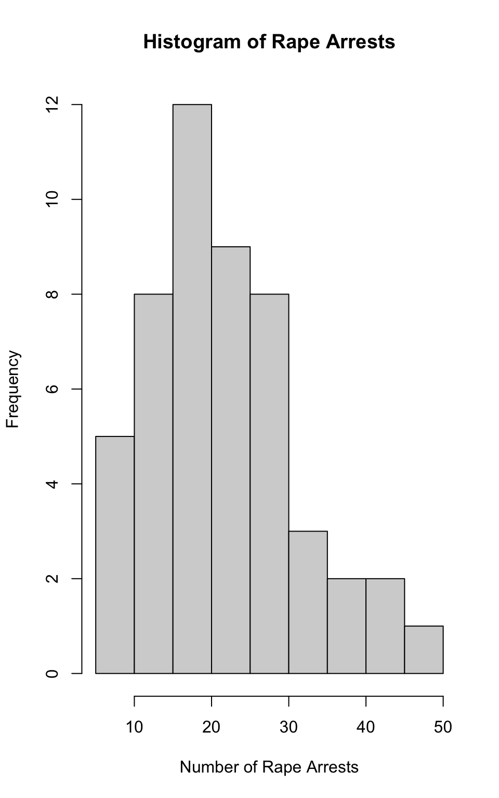
#plot all three histograms together
par(mfrow=c(3,1))
hist(dat$Murder, main = "Histogram of Murder Arrests", xlab = "Number of Murder Arrests", ylab = "Frequency")
hist(dat$Assault, main = "Histogram of Assault Arrests", xlab = "Number of Assault Arrests", ylab = "Frequency")
hist(dat$Rape, main = "Histogram of Rape Arrests", xlab = "Number of Rape Arrests", ylab = "Frequency")
What does the command par do, in your own words (you can look this up by asking R ?par)?
Par can be used to set the parameters on a graph, making it easier to combine multiple graphs into one.
What can you learn from plotting the histograms together?
By plotting these histograms together, you can compare the arrest rates for each crime. Murders happen the least frequently and assaults happen the most frequently. You can also see that the histogram for murder is unimodal and skewed, the histogram for assaults is bimodal, and the histogram for rapes is also unimodal and skewed.
Problem 8
In the console below (not in text), type install.packages("maps") and press Enter, and then type install.packages("ggplot2") and press Enter. This will install the packages so you can load the libraries.
#install and load in the maps and ggplot2 packages
library('maps')
library('ggplot2') Run this code:
ggplot(dat, aes(map_id=state, fill=Murder)) +
geom_map(map=map_data("state")) +
expand_limits(x=map_data("state")$long, y=map_data("state")$lat) What does this code do? Explain what each line is doing.
What does this code do? Explain what each line is doing.
The first line above the map code loads the library for both packages. The first line of the map code is creating a plot of murder. The ggplot function is telling R to create a plot, the “dat” is telling R which dataset to use in the plot, and the “aes(map_id=state, fill=Murder))” is telling R to plot each state and fill it with the corresponding murder arrest rate. The geom_map function creates shapes for a reference map, and the map=map_data(“state”) function is telling R to map the data that corresponds with the state variable that we created earlier. The expand_limits function makes sure that the entire map fits within the plot of the graph and the (x=map_data(“state”)\(long, y=map_data("state")\)lat) tells R which data to base the plot limits off of, which in this case is the state data.
Assignment 2
Problem 1
Load in the data.
dat <- read.csv(file = "data/Assignment2datacopy.csv")What are the dimensions of the dataset?
dim(dat)## [1] 171 7There are 171 columns and 7 rows (or 171 respondents and 7 questions)
Problem 2
Describe the variables in the dataset.
names(dat)## [1] "mjage" "cigage" "iralcage" "age2" "sexatract" "speakengl"
## [7] "irsex"There are 7 variables in the dataset: 1. “mjage” (How old were you the first time you used marijuana or hashish?) 2. “cigage” (How old were you when you first started smoking cigarettes everyday?) 3. “iralcage” (How old were you when you first tried alcohol?) 4. “age2” (Recoded final edited age (since respondents had multiple chances to change their age throughout the survey)) 5. “sexatract” (Sexual attraction) 6. “speakengl” (How well do you speak English) 7. “irsex” (Imputation revised gender)
Mjage, cigage, and iralcage are numeric variables (or quantitative) because the respondent gave an exact number for their answers for each variable and functions like mean can be applied to find the average age the respondents tried marijuana, cigarettes, and alcohol. Age2, sexatract, speakengl, and irsex are categorical variables because the respondents’ answers were split into categories when coded. Because respondents had the opportunity to change their age throughout the interview, the age variable was calculated from the raw birth date and the final edited interview date, the age entered in the questionnaire roster (if it exists), and the pre-interview screener age because interviewees had the opportunity to change their age throughout the interview.
What is this dataset about? Who collected the data, what kind of sample is it, and what was the purpose of generating the data? The dataset is a small sample from the National Survey of Drug Use and Health, which was conducted by the Center for Behavioral Health Statistics and Quality (CBHSQ, formerly the Office of Applied Studies) within the Substance Abuse and Mental Health Services Administration (SAMHSA) and is conducted by RTI International, Research Triangle Park, North Carolina. The survey was conducted through a computer assisted administration, and was changed from a strictly national design to a state-based sampling plan in 1999. The primary purpose of generating the data was to measure the prevalence and correlation of substance use and mental health issues in the United States, according to the NSDUH 2019 Codebook.
Problem 3: Age and gender
What is the age distribution of the sample like? Make sure you read the codebook to know what the variable values mean.
hist(dat$age2, main = "Histogram of Recoded Final Edited Age Categories", xlab = "Recoded Final Edited Age Categories") The age variable is skewed to the left, with the majority of the values in the 14-16 bin (which means that the majority of the people in the dataset are 30 to 64 years old, according to the codebook). There are fewer people who were very young when filling out the survey, with only a few in the 4-6 and 6-8 bins (meaning that the respondents in these bins were 15-17 and 18-19, respectively).
The age variable is skewed to the left, with the majority of the values in the 14-16 bin (which means that the majority of the people in the dataset are 30 to 64 years old, according to the codebook). There are fewer people who were very young when filling out the survey, with only a few in the 4-6 and 6-8 bins (meaning that the respondents in these bins were 15-17 and 18-19, respectively).
Do you think this age distribution representative of the US population? Why or why not?
min(dat$age2) #the youngest respondent was 15 (category 4)## [1] 4max(dat$age2) #the oldest respondent was 65 years old or older (category 17)## [1] 17Yes, I think that this age distribution is representative of the US population. The survey was conducted in order to evaluate drug use, and I would think that people would not try drugs before turning 15 (the youngest respondent) and very few people would continue using drugs when they are 65 years old or older (the oldest respondent). Also, according to the codebook, the participants were randomly selected to complete the survey, which fulfills one requirement of a representative sample. It makes sense that the number of respondents increased when the respondents were 19 to 23 (8 to 12 categories) as those are the ages when most people would be exposed to marijuana, drugs, and alcohol for the first time, and that the number of respondents increased again when the respondents were 24 to 64 (categories 12 to 16), as those are the ages that people would continue to use marijuana, drugs, and alcohol as adults (especially after potentially being exposed in college). I also think that it makes sense that the majority of respondents were 34 to 64 years old, because older generations are more likely to have smoked cigarettes everyday before perception and knowledge changed.
Is the sample balanced in terms of gender? If not, are there more females or males?
table(dat$irsex, dat$age2)##
## 4 6 7 8 9 10 11 12 13 14 15 16 17
## 1 1 1 1 0 1 1 3 3 14 10 33 14 9
## 2 1 0 0 2 6 2 3 4 13 6 29 10 4The sample is not balanced in terms of gender. There were 91 males included in the dataset and 80 females included.
Use this code to draw a stacked bar plot to view the relationship between sex and age. What can you conclude from this plot?
tab.agesex <- table(dat$irsex, dat$age2)
barplot(tab.agesex,
main = "Stacked barchart",
xlab = "Age category", ylab = "Frequency",
legend.text = rownames(tab.agesex),
beside = FALSE) # Stacked bars (default) From this plot, I can conclude that more males answered the survey than females, as most age categories have a higher frequency of males than females (especially in categories 6 and 7). I can also conclude than more older males answered the survey than older females. As indicated in both the plot and the table of sex and age categories, the highest five categories (13, 14, 15, 16, and 17) had more male responses than females (1 more, 4 more, 4 more, 4 more, and 5 more, respectively).
From this plot, I can conclude that more males answered the survey than females, as most age categories have a higher frequency of males than females (especially in categories 6 and 7). I can also conclude than more older males answered the survey than older females. As indicated in both the plot and the table of sex and age categories, the highest five categories (13, 14, 15, 16, and 17) had more male responses than females (1 more, 4 more, 4 more, 4 more, and 5 more, respectively).
Problem 4: Substance use
For which of the three substances included in the dataset (marijuana, alcohol, and cigarettes) do individuals tend to use the substance earlier?
boxplot(dat$mjage, dat$cigage, dat$iralcage, main = "Substance Usage and Age",
ylab="Age", xlab="Types of Substances",
names=c("Marijuana or Hashish","Cigarettes","Alcohol")) Based on the boxplot of substance usage and age, it looks like individuals tend to use alcohol earlier than marijuana / hashish or earlier than they started smoking cigarettes every day.
Based on the boxplot of substance usage and age, it looks like individuals tend to use alcohol earlier than marijuana / hashish or earlier than they started smoking cigarettes every day.
min(dat$mjage) ## [1] 7min(dat$cigage) ## [1] 10min(dat$iralcage) ## [1] 5Looking at the minimum values for each type of substance, the minimum recorded age for when an individual first tried marijuana / hashish was 7, the minimum recorded age for when an individual first started smoking cigarettes everyday was 10, and the minimum recorded age for when an individual first tried alcohol was 5. This also confirms that like individuals tend to use alcohol earlier than marijuana / hashish or earlier than they started smoking cigarettes every day.
Problem 5: Sexual attraction
What does the distribution of sexual attraction look like? Is this what you expected?
dat.sexat <- subset(dat$sexatract, subset = dat$sexatract<7)
hist(dat.sexat, main = "Distribution of Sexual Attraction", xlab = "Sexual Attraction") The distribution of sexual attraction is skewed to the right, with the majority of respondents answering that they are only attracted to the opposite sex (category one). The next greatest frequency of response is that the respondent is mostly attracted to the opposite sex (category 2), and then followed by the respondent is equally attracted to males and females (category 3). This is exactly what I expected because I would think that an overwhelming majority of people would be straight as that is most common in the United States.
The distribution of sexual attraction is skewed to the right, with the majority of respondents answering that they are only attracted to the opposite sex (category one). The next greatest frequency of response is that the respondent is mostly attracted to the opposite sex (category 2), and then followed by the respondent is equally attracted to males and females (category 3). This is exactly what I expected because I would think that an overwhelming majority of people would be straight as that is most common in the United States.
What is the distribution of sexual attraction by gender?
table(dat$irsex, dat$sexatract)##
## 1 2 3 4 5 6 99
## 1 82 3 0 1 2 1 2
## 2 54 13 9 2 1 0 1library(dplyr)
dat$sexatract <- dat$sexatract %>% na_if(., "85")
dat$sexatract <- dat$sexatract %>% na_if(., "94")
dat$sexatract <- dat$sexatract %>% na_if(., "97")
dat$sexatract <- dat$sexatract %>% na_if(., "98")
dat$sexatract <- dat$sexatract %>% na_if(., "99")
dat.five <- data.frame(dat$sexatract, dat$irsex)
barplot <- barplot(table(dat.five$dat.irsex, dat.five$dat.sexatract),
main = "Sexual Attraction and Gender",
xlab = "Sexaul Attraction Category",
ylab = "Count",
border = "black",
col = c("hotpink1", "blue"),
ylim = c(0,171), legend.text = c("Males","Females"),
)
barplot## [1] 0.7 1.9 3.1 4.3 5.5 6.7Looking at the stacked bar plot of sexual attraction and gender, it confirms what was seen in the table that more males than females responded that they are only attracted to the opposite sex (category one). It also confirms that more females than males answered that they are mostly attracted to the opposite sex (category 2) and are equally attracted to males and females (category 3).
Problem 6: English speaking
What does the distribution of English speaking look like in the sample?
hist(dat$speakengl, main = "Histogram of English Speakers", xlab = "How Well You Speak English (1 - lowest, 4 - highest)") The distribution of English speaking looks extremely skewed to the right, with the majority of respondents answering that they speak English very well (category one).
The distribution of English speaking looks extremely skewed to the right, with the majority of respondents answering that they speak English very well (category one).
table(dat$speakengl)##
## 1 2 3
## 161 8 2Looking at the table of respondents who answered the “Speak English” question,161 people answered that the speak English very well, eight answered that they speak English well, and only two answered that they speak English not well. This confirms the skew seen in the histogram.
Is this what you might expect for a random sample of the US population? This is what I would expect a random sample of the US population to look like, as the majority of people in the US speak English and speak it very well. Even if there were people included in the random sample from places that do not speak as much English, like Texas or Miami, for example, the large amount of people who do speak English well would account for what is seen in the histogram.
Are there more English speaker females or males?
table(dat$irsex, dat$speakengl)##
## 1 2 3
## 1 84 7 0
## 2 77 1 2barplot(table(dat$irsex, dat$speakengl),
main="English Speaking Level and Gender",
xlab="English Speaking Level Category",
ylab="Count",
col=c("hotpink1", "blue"),
ylim = c(0,200), legend.text = c("Males","Females")
) Looking at the stacked bar plot of English speaking level and gender, it looks like the number of males and females that answered that they spoke English very well was pretty close, will a few more males (exactly 11, according to the table). The plot also confirms that more men responded that they spoke English well than women, and that no men responded that they spoke English not well.
Looking at the stacked bar plot of English speaking level and gender, it looks like the number of males and females that answered that they spoke English very well was pretty close, will a few more males (exactly 11, according to the table). The plot also confirms that more men responded that they spoke English well than women, and that no men responded that they spoke English not well.
Exam 1
Instructions
Create a folder in your computer (a good place would be under Crim 250, Exams).
Download the dataset from the Canvas website (fatal-police-shootings-data.csv) onto that folder, and save your Exam 1.Rmd file in the same folder.
Download the README.md file. This is the codebook.
Load the data into an R data frame.
dat <- read.csv(file = "data/fatal-police-shootings-datacopy.csv")Problem 1 (10 points)
- Describe the dataset. This is the source: https://github.com/washingtonpost/data-police-shootings . Write two sentences (max.) about this.
The dataset is made up of every fatal police shooting in the US since January 1, 2015, as collected by the Washington Post. The dataset includes 6594 people and 17 variables, which contain important information about each shooting, such as the name of the person shot, their mental health status, and their race.
- How many observations are there in the data frame?
dim(dat)## [1] 6594 17There are 6594 observations in the data frame.
- Look at the names of the variables in the data frame. Describe what “body_camera”, “flee”, and “armed” represent, according to the codebook. Again, only write one sentence (max) per variable.
names(dat)## [1] "id" "name"
## [3] "date" "manner_of_death"
## [5] "armed" "age"
## [7] "gender" "race"
## [9] "city" "state"
## [11] "signs_of_mental_illness" "threat_level"
## [13] "flee" "body_camera"
## [15] "longitude" "latitude"
## [17] "is_geocoding_exact"The “body_camera” variable indicates whether or not news reports stated that a police officer that was at the scene of the incident was wearing a body camera and may have recorded parts of the incident. The “flee” variable indicates whether or not news reports have started that the victim was moving away from the officer during the incident. The “armed” variable indicates whether or not the victim was armed with any type of weapon that could have been thought to as possible to cause harm by an officer.
- What are three weapons that you are surprised to find in the “armed” variable? Make a table of the values in “armed” to see the options.
head(table(dat$armed))##
## air conditioner air pistol Airsoft pistol ax
## 207 1 1 3 24
## barstool
## 1Three weapons that I was surprised to find in the dataset were an air conditioner, microphone, and pen.I feel like an air conditioner and microphone are definitely unusual weapons, and the pen does not seem like it would do anything against an officer’s gun.
Problem 2 (10 points)
- Describe the age distribution of the sample. Is this what you would expect to see?
hist(dat$age, main = "Age Distribution of the Sample", xlab = "Age", xlim = c(0, 100))The age distribution of the sample is skewed to the right, with a large number of values between ages 20 and 40. This indicates that most people killed by the police in fatal shootings are young, and that older people between ages 60 and 100 are being killed in fatal police shootings at a much lower rate. This is exactly what I expected to see in the age distribution because younger people, especially in the 20 to 40 year old range, are more likely to have encounters with the police, as well as be healthy and be able to try to talk to or provoke the police and try to run away.
- To understand the center of the age distribution, would you use a mean or a median, and why? Find the one you picked.
median(dat$age, na.rm = TRUE)## [1] 35To understand the center of the age distribution, I would use the median because the data is skewed to the right and the median is a more robust measure of skewed data as the mean changes with skew or outliers. The median of the age distribution for this dataset is 35 years old, and I removed the missing values since there are only 308 of them out of 6594 observations and they indicate that the person’s age was unknown or missing.
- Describe the gender distribution of the sample. Do you find this surprising?
table(dat$gender)##
## F M
## 3 293 6298counts <- table(dat$gender, useNA = "ifany")
barplot(counts, main = "Gender Distrubution", xlab = "Gender", ylab = "Counts", names=c("None", "Females", "Males"))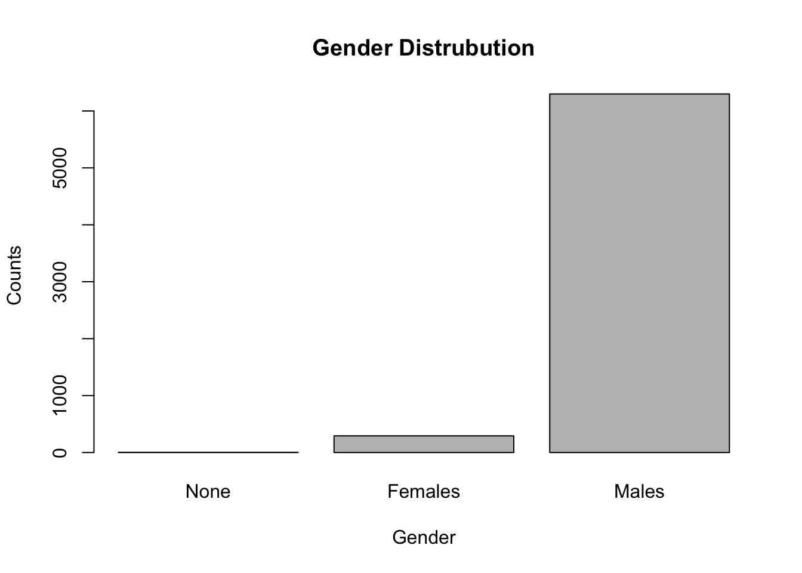
The gender distribution is definitely skewed, with 6005 more males being fatally shot by police officers than females. This can also be seen in the barplot, with the majority of respondents being males. There were also 3 unknown values in the data, indicating no gender according to the codebook. I do not find this surprising, however, because the majority of police shootings that we hear about in the news are of males, with the rare occurrence of a female. While females are definitely still being killed by the police, it is happening disproportionately to males which is indicated by both the news and the data.
Problem 3 (10 points)
- How many police officers had a body camera, according to news reports? What proportion is this of all the incidents in the data? Are you surprised that it is so high or low?
table(dat$body_camera)##
## False True
## 5684 910910/6594## [1] 0.1380042According to the news reports, 910 police officers had a body camera, which is about 13.80% of all incidents in the data. I am surprised that this is so low because I would think that after the 2014 killing of Michael Brown and subsequent police shootings, police offices and the public would call for an increased use of body cameras.
- In how many of the incidents was the victim fleeing? What proportion is this of the total number of incidents in the data? Is this what you would expect?
table(dat$flee)##
## Car Foot Not fleeing Other
## 491 1058 845 3952 2481058+845+248 #fleeing## [1] 21512151/6594## [1] 0.3262056There are 2151 incidents of the victim fleeing, which is about 32.62% of all incidents in the data. This was calculated by including the 491 unknown observations in the “not fleeing” group, as what this category of observations represents was not included in the codebook and cannot be assumed to be fleeing, especially since there is already an “other” group. This is pretty much what I would expect because I would think that the majority of people when interacting with the police would not flee, since it is known that the consequences would probably be worse because of it.
Problem 4 (10 points) - Answer only one of these (a or b).
- Describe the relationship between the variables “body camera” and “flee” using a stacked barplot. What can you conclude from this relationship?
Hint 1: The categories along the x-axis are the options for “flee”, each bar contains information about whether the police officer had a body camera (vertically), and the height along the y-axis shows the frequency of that category).
Hint 2: Also, if you are unsure about the syntax for barplot, run ?barplot in R and see some examples at the bottom of the documentation. This is usually a good way to look up the syntax of R code. You can also Google it.
library(ggplot2)
ggplot(dat, aes(fill=body_camera, y=frequency(body_camera), x=flee)) +
geom_bar(position="stack", stat="identity") +
ggtitle("Stacked Barplot of Body Camera Usage and Victim Fleeing") +
labs(y="Frequency of Body Camera Usage", x = "How the Victim Fled") +
labs(fill = "Body Camera Usage")
From the plot, it can be seen that everybody that fled from the police did so more often when the police were not wearing a body camera. It looks like not fleeing and the police wearing a body camera are related, as when more police wore a body camera less people fled (since the not fleeing bar had the most police wearing a body camera). You can also see that the most people fled by using a car, which during those indicidents police were less likely to wear a body camera than to actually have it on. While it is unknown what the first bar represents as it is left out of the codebook, it follows the same pattern of the other bars that the police did not wear body cameras more often than they did.
- Describe the relationship between age and race by using a boxplot. What can you conclude from this relationship?
Hint 1: The categories along the x-axis are the race categories and the height along the y-axis is age.
Hint 2: Also, if you are unsure about the syntax for boxplot, run ?boxplot in R and see some examples at the bottom of the documentation. This is usually a good way to look up the syntax of R code. You can also Google it.
boxplot <- ggplot(dat, aes(x=race, y=age)) +
geom_boxplot() +
ggtitle("Boxplot of Race and Age")
boxplot
The relationship between race and age looks pretty even, with the median values of age for each race category between 25 and 37. The range for all ages except White is between 12 and 62, while the White range extends from about 5 to 80. There are a significant number of outliers, however, for the Black, Hispanic, and White categories. The NAs for age were removed, and the unknown race category was plotted first on the graph but cannot be interpreted as it is not in the codebook. From this relationship, I can conclude that on average, all races of a similar age between 25 and 37 are killed at similar rates. While there are some outliers to this, especially for the Black and Hispanic categories, all of the medians of age for each race is almost identical.
Extra credit (10 points)
- What does this code tell us?
mydates <- as.Date(dat$date)
head(mydates)
(mydates[length(mydates)] - mydates[1])The as.Date function in R converts the string of date values into actual dates that functions can be applied to. The head function makes sure that this conversion was done correctly by showing us the first 6 values of the data. The “(mydates[length(mydates)] - mydates[1])” function tells us the time difference between the last observation (which is the entire length of mydates) and the first obeservation (which is "mydates[1]), which ends up being 2458 days.
- On Friday, a new report was published that was described as follows by The Guardian: “More than half of US police killings are mislabelled or not reported, study finds.” Without reading this article now (due to limited time), why do you think police killings might be mislabelled or underreported?
I think that police killings may be mislabeled or underreported because police offices do not want to admit to have killing anyone or engaging in illegal or overly forceful activities. I think that there may be disparities between the police reporting shooting and witnesses observing shootings, as police offices may be less likely to do so. I also think that police offices may mislabel the shooting as something that was not their fault so that they do not get attacked by the public for the incident.
- Regarding missing values in problem 4, do you see any? If so, do you think that’s all that’s missing from the data?
Yes, I saw missing values in problem 4 in the age category. The race and fleeing variable also had unknown values, as it was not indicated by the codebook. I do not think that this is all that is missing from the data, as other variables, such as gender, also had missing or unknown values. I think that going along with part b, some of the data reported was mislabeled or incorrect, and this may be represented by the missing or unknown values in the data.
Assignment 3
Load the data.
library(readr)
library(knitr)
dat.crime <- read_delim("/Users/briannafisher/Dropbox/CRIM250/Data/crime_simple.txt", delim = "\t")This is a dataset from a textbook by Brian S. Everitt about crime in the US in 1960. The data originate from the Uniform Crime Report of the FBI and other government sources. The data for 47 states of the USA are given.
Here is the codebook:
R: Crime rate: # of offenses reported to police per million population
Age: The number of males of age 14-24 per 1000 population
S: Indicator variable for Southern states (0 = No, 1 = Yes)
Ed: Mean of years of schooling x 10 for persons of age 25 or older
Ex0: 1960 per capita expenditure on police by state and local government
Ex1: 1959 per capita expenditure on police by state and local government
LF: Labor force participation rate per 1000 civilian urban males age 14-24
M: The number of males per 1000 females
N: State population size in hundred thousands
NW: The number of non-whites per 1000 population
U1: Unemployment rate of urban males per 1000 of age 14-24
U2: Unemployment rate of urban males per 1000 of age 35-39
W: Median value of transferable goods and assets or family income in tens of $
X: The number of families per 1000 earning below 1/2 the median income
We are interested in checking whether the reported crime rate (# of offenses reported to police per million population) and the average education (mean number of years of schooling for persons of age 25 or older) are related.
Problem 1
How many observations are there in the dataset? To what does each observation correspond?
dim(dat.crime)## [1] 47 14There are 47 observations in the dataset, with 14 different variables. Each observation corresponds to a particular state.
Problem 2
Draw a scatterplot of the two variables. Calculate the correlation between the two variables. Can you come up with an explanation for this relationship?
plot(dat.crime$Ed, dat.crime$R, main = "Scatterplot of Average Education and Reported Crime Rate", xlab = "mean number of years of schooling for persons of age 25 or older times 10", ylab = "# of offenses reported to police per million population")
cor(dat.crime$R, dat.crime$Ed)## [1] 0.3228349The correlation of the reported crime rate (measured in the number of offenses reported to police per million population) and average education (measured in the mean number of years of schooling for persons of age 25 or older times 10) is 0.32, which is pretty weak. The scatterplot of these variables proves this, as it is positive but fairly spread out. One explanation for this relationship may be that states with bigger cities are populated by people with more years of education than states with rural areas, and states with bigger cities have higher reported crime rates. While these two variables specificaly are not highly correlated (since the value was 0.32), high average education and high reported crime rates are both characteristic of states with big cities.
Problem 3
Regress reported crime rate (y) on average education (x) and call this linear model crime.lm and write the summary of the regression by using this code, which makes it look a little nicer {r, eval=FALSE} kable(summary(crime.lm)$coef, digits = 2).
crime.lm <- lm(formula = R ~ Ed, data = dat.crime)
summary(crime.lm)##
## Call:
## lm(formula = R ~ Ed, data = dat.crime)
##
## Residuals:
## Min 1Q Median 3Q Max
## -60.061 -27.125 -4.654 17.133 91.646
##
## Coefficients:
## Estimate Std. Error t value Pr(>|t|)
## (Intercept) -27.3967 51.8104 -0.529 0.5996
## Ed 1.1161 0.4878 2.288 0.0269 *
## ---
## Signif. codes: 0 '***' 0.001 '**' 0.01 '*' 0.05 '.' 0.1 ' ' 1
##
## Residual standard error: 37.01 on 45 degrees of freedom
## Multiple R-squared: 0.1042, Adjusted R-squared: 0.08432
## F-statistic: 5.236 on 1 and 45 DF, p-value: 0.02688Problem 4
- Are the four assumptions of linear regression satisfied? To answer this, draw the relevant plots. (Write a maximum of one sentence per assumption.)
#linearity and independence assumptions - residuals vs. x plot
plot(dat.crime$Ed, crime.lm$residuals, ylim=c(-15,15), main="Residuals vs. Average Education", xlab="mean number of years of schooling for persons of age 25 or older times 10", ylab="Residuals")
abline(h = 0, lty="dashed")
#linearity assumption - residuals vs. fitted
plot(crime.lm, which=1)
Both the residuals vs. x plot and residuals vs. fitted plot show no clear linear patterns and the residuals appear evenly spread out above and below both lines, so it satisfies the linearity assumption (because there are also only 47 observations, with the number that are given we can assume this is good enough for linear regression).
Looking again at the residuals vs. x plot, we see that there are no patterns in the plot, so the independence assumption is fulfilled.
#equal variance / homoscedasticity assumption - resuiduals vs. predicted values
plot(crime.lm, which=3)
Looking at the residuals plotted against the predicted values, the red line looks pretty flat and there are no significant trends in the red line, so the equal variance / homoscedasticity assumption looks satisfied, but the scatterplot we made earlier shows no strong linear association.
#Normal population assumption - residuals vs. leverage plot
plot(crime.lm, which=5)
#Normal population assumption - Normal qq plot
plot(crime.lm, which=2)
The residuals vs. leverage plot fulfills the normal population assumption as the values are within Cook’s distance, but the normal qq plot looks like there is an issue with some of the values curving, especially since we know these are not outliers.
Problem 5
Is the relationship between reported crime and average education statistically significant? Report the estimated coefficient of the slope, the standard error, and the p-value. What does it mean for the relationship to be statistically significant?
The relationship between reported crime rates and average education is statistically significant. The coefficient of the slope is 1.1161, which means that on average, for every additional year of average education, the reported crime rate increases by 1.1161 offenses reported to police per million population. The standard error is 0.4878, which means that the number of offenses reported to the police per million population can vary by 0.4878 offenses. The p-value is 0.02688, which means that we can reject the null hypothesis and conclude that there is a relationship between reported crime rates and average education. For the relationship to be statistically significant, it would mean that the p-value is less than 0.05, telling us that it is unlikely that the relationship between reported crime rates and average education is due to chance.
Problem 6
How are reported crime and average education related? In other words, for every unit increase in average education, how does reported crime rate change (per million) per state?
On average, for every additional year of average education, the reported crime rate increases by 1.1161 offenses reported to police per million population per state.
Problem 7
Can you conclude that if individuals were to receive more education, then crime will be reported more often? Why or why not?
You cannot conclude that if individuals were to receive more education, then crime will be reported more often. While the p-value indicates that there is some relationship between the two variables, the correlation between them is only 0.32 and the r-squared value is 0.1042. Neither of these values indicate a strong relationship between average education and reported crime rate. This statement also implies causation, that if people received more education then crime will decrease. Causation cannot be assumed, as there may be other causes or hidden variables that influence the decrease in crime rate with increased education. Similarly, this dataset is in relation to states, not individuals, so this statement could not be proven by this linear model.
Exam 2
Instructions
Create a folder in your computer (a good place would be under Crim 250, Exams).
Download the dataset from the Canvas website (sim.data.csv) onto that folder, and save your Exam 2.Rmd file in the same folder.
Data description: This dataset provides (simulated) data about 200 police departments in one year. It contains information about the funding received by the department as well as incidents of police brutality. Suppose this dataset (sim.data.csv) was collected by researchers to answer this question: “Does having more funding in a police department lead to fewer incidents of police brutality?”
Codebook:
- funds: How much funding the police department received in that year in millions of dollars.
- po.brut: How many incidents of police brutality were reported by the department that year.
- po.dept.code: Police department code
Problem 1: EDA (10 points)
Describe the dataset and variables. Perform exploratory data analysis for the two variables of interest: funds and po.brut.
dat <- read.csv(file = '/Users/briannafisher/Dropbox/CRIM250/CRIM 250 Github/BriannaFisher/data/sim.data.2.csv')
dim(dat)## [1] 200 3names(dat)## [1] "po.dept.code" "funds" "po.brut"The dataset has 200 observations and 3 variables, with each observation corresponding to a particular police department. The variables are “po.dept.code”, which is the police department code, “funds”, which is the amount of funding the department received that year in millions of dollars, and “po.brut”, which is the number of incidents of police brutality reported by the department that year.
plot(dat$funds, dat$po.brut, main = "Scatterplot of Department Funding and Police Brutality", xlab = "Department Funding in Millions of Dollars that Year", ylab = "Number of Incidents of Police Brutality that Year", xlim = c(0,100))
cor(dat$funds, dat$po.brut)## [1] -0.9854706Looking at the scatterplot of department funding and police brutality, it looks like the two have a strong, negative association. As department funding increases, it looks like reported police brutality incidents decreases. The two variables also have a correlation of -0.985, indicating that the two are strongly, negatively correlated.
Problem 2: Linear regression (30 points)
- Perform a simple linear regression to answer the question of interest. To do this, name your linear model “reg.output” and write the summary of the regression by using “summary(reg.output)”.
reg.output <- lm(formula = po.brut ~ funds, data = dat)
summary(reg.output)##
## Call:
## lm(formula = po.brut ~ funds, data = dat)
##
## Residuals:
## Min 1Q Median 3Q Max
## -3.9433 -0.2233 0.2544 0.5952 1.1803
##
## Coefficients:
## Estimate Std. Error t value Pr(>|t|)
## (Intercept) 40.543069 0.282503 143.51 <2e-16 ***
## funds -0.367099 0.004496 -81.64 <2e-16 ***
## ---
## Signif. codes: 0 '***' 0.001 '**' 0.01 '*' 0.05 '.' 0.1 ' ' 1
##
## Residual standard error: 0.9464 on 198 degrees of freedom
## Multiple R-squared: 0.9712, Adjusted R-squared: 0.971
## F-statistic: 6666 on 1 and 198 DF, p-value: < 2.2e-16- Report the estimated coefficient, standard error, and p-value of the slope. Is the relationship between funds and incidents statistically significant? Explain.
The relationship between reported incidents of police brutality and department funding is statistically significant. The estimated coefficient is -0.367, which means that one unit higher of funding is associated with 0.367 less reported incidents of police brutality. The standard error is 0.0045, which means that the number of reported incidents of police brutality can vary by 0.0045 incidents. The p-value is less than 2.2e-16, which means that we can reject the null hypothesis and conclude that there is a relationship between reported incidents of police brutality and department funding. For the relationship to be statistically significant, it would mean that the p-value is less than 0.05 (which 2.2e-16 is), telling us that it is unlikely that the relationship between reported incidents of police brutality and department funding is due to chance.
- Draw a scatterplot of po.brut (y-axis) and funds (x-axis). Right below your plot command, use abline to draw the fitted regression line, like this:
plot(dat$funds, dat$po.brut, main = "Scatterplot of Department Funding and Police Brutality", xlab = "Department Funding in Millions of Dollars that Year", ylab = "Number of Incidents of Police Brutality that Year", xlim = c(0,100))
abline(reg.output, col = "red", lwd=2) Does the line look like a good fit? Why or why not?
Does the line look like a good fit? Why or why not?
Looking at the scatterplot, the line does not look like a good fit. The points on the scatterplot look curved, with the values on both ends of the line curving away from the line. If the line was a good fit, it would have no pattern and the data would also form a straight line. However, looking at the regression output, the R squared is 0.9712, indicating that the model fits the data incredibly well. Because my eyes can be deceiving and I changed the x-axis of the plot to include 0 squishing the data more towards the end of the plot, I would go with the R squared value and say that the line is a good fit.
- Are the four assumptions of linear regression satisfied? To answer this, draw the relevant plots. (Write a maximum of one sentence per assumption.) If not, what might you try to do to improve this (if you had more time)?
Assumption 1
#linearity and independence assumptions - residuals vs. x plot
plot(dat$funds, reg.output$residuals, ylim=c(-15,15), main="Residuals vs. Department Funding", xlab="Department Funding in Millions of Dollars that Year", ylab="Residuals")
abline(h = 0, lty="dashed")
#linearity assumption - residuals vs. fitted
plot(reg.output, which=1) Because both the residuals vs. x plot and residuals vs. fitted plot show clear curved patterns in the plots instead of no pattern at all, I would say that the linearity assumption is not satisfied.
Because both the residuals vs. x plot and residuals vs. fitted plot show clear curved patterns in the plots instead of no pattern at all, I would say that the linearity assumption is not satisfied.
Assumption 2 Looking again at the residuals vs. x plot, we see that there is a curved pattern in the plot, so the independence assumption is not satisfied.
Assumption 3
#equal variance / homoscedasticity assumption - resuiduals vs. predicted values
plot(reg.output, which=3) Looking at both the scatterplot from question 1 and the scale-location plot, there is a clear pattern in the plot, so the equal variance / homoscedasticity assumption is not satisfied.
Looking at both the scatterplot from question 1 and the scale-location plot, there is a clear pattern in the plot, so the equal variance / homoscedasticity assumption is not satisfied.
Assumption 4
#Normal population assumption - residuals vs. leverage plot
plot(reg.output, which=5)
#Normal population assumption - Normal qq plot
plot(reg.output, which=2) Looking at the residuals vs. leverage plot (it looks like many values are clustered at the top of the line) and the normal qq plot (the values on the ends of the line are curving away from the line), the normal population assumption is not satisfied.
Looking at the residuals vs. leverage plot (it looks like many values are clustered at the top of the line) and the normal qq plot (the values on the ends of the line are curving away from the line), the normal population assumption is not satisfied.
Because none of the assumptions are satisfied, if I had more time I would perform some sort of transformation to the data. I would probably start with logging funds, because I know that wages are usually logged when performing linear regression and funds are a pretty similar type of variable.
- Answer the question of interest based on your analysis: “Does having more funding in a police department lead to fewer incidents of police brutality?”
Based on my analysis, it cannot be concluded that having more funding in a police department leads to fewer incidents of police brutality, as this implies causation and there could be hidden variables influencing the relationship. However,it does seem like having more funding in a police department is associated with fewer incidents of police brutality. The scatterplot and correlation show a strong negative relationship between the variables, and the p-value is statistically significant indicating that this relationship is not due to chance. Also, I do not think that the linear model is the best way to represent the data without performing any transformations. All of the assumptions were not satisfied, and even the scatterplot indicates a slight curving pattern. Transforming the data may give more insight into the association between department funding and incidents of police brutality.
Problem 3: Data ethics (10 points)
Describe the dataset. Considering our lecture on data ethics, what concerns do you have about the dataset? Once you perform your analysis to answer the question of interest using this dataset, what concerns might you have about the results?
Considering our lecture on data ethics, I am concerned that the dataset is biased because the police brutality variable is based off of the reported incidents of police brutality by the departments themselves. There is no way to know if departments are under reporting brutality, so the numbers in the dataset may not be correct or may not actually be reporting the ground truth of police brutality. Once I performed my analysis, I am concerned that the results may interpreted that more funding leads to less brutality (as even stated in the question of interest). This, however, implies causation, and while there is a relationship between the two variables there may be another hidden variable that is truly causing the association. It may be that having more funding leads to better service programs being provided by the police which leads to decreased police brutality, but that is something that cannot be proven with this dataset and analysis. In terms of implications, a policy maker may look at this analysis and think that increasing funding is the best solution to decreasing police brutality, which other research has proven that may not be the case. This analysis could, essentially, cause more harm if all police departments had an increase in funding but the funding was misused or put towards other things than decreasing police brutality.
Assignment 4 - Active Readings
Chapter 3 Data Visualization
3.2 First Steps
First load in the library tidyverse, which contains the dataset we want to analyze
library(tidyverse)Bring up the dataset we want to look at within the tidyverse, which is mpg
mpg## [38;5;246m# A tibble: 234 × 11[39m
## manufacturer model displ year cyl trans drv cty hwy fl class
## [3m[38;5;246m<chr>[39m[23m [3m[38;5;246m<chr>[39m[23m [3m[38;5;246m<dbl>[39m[23m [3m[38;5;246m<int>[39m[23m [3m[38;5;246m<int>[39m[23m [3m[38;5;246m<chr>[39m[23m [3m[38;5;246m<chr>[39m[23m [3m[38;5;246m<int>[39m[23m [3m[38;5;246m<int>[39m[23m [3m[38;5;246m<chr>[39m[23m [3m[38;5;246m<chr>[39m[23m
## [38;5;250m 1[39m audi a4 1.8 [4m1[24m999 4 auto… f 18 29 p comp…
## [38;5;250m 2[39m audi a4 1.8 [4m1[24m999 4 manu… f 21 29 p comp…
## [38;5;250m 3[39m audi a4 2 [4m2[24m008 4 manu… f 20 31 p comp…
## [38;5;250m 4[39m audi a4 2 [4m2[24m008 4 auto… f 21 30 p comp…
## [38;5;250m 5[39m audi a4 2.8 [4m1[24m999 6 auto… f 16 26 p comp…
## [38;5;250m 6[39m audi a4 2.8 [4m1[24m999 6 manu… f 18 26 p comp…
## [38;5;250m 7[39m audi a4 3.1 [4m2[24m008 6 auto… f 18 27 p comp…
## [38;5;250m 8[39m audi a4 quattro 1.8 [4m1[24m999 4 manu… 4 18 26 p comp…
## [38;5;250m 9[39m audi a4 quattro 1.8 [4m1[24m999 4 auto… 4 16 25 p comp…
## [38;5;250m10[39m audi a4 quattro 2 [4m2[24m008 4 manu… 4 20 28 p comp…
## [38;5;246m# … with 224 more rows[39m#> # A tibble: 234 x 11
#> manufacturer model displ year cyl trans drv cty hwy fl class
#> <chr> <chr> <dbl> <int> <int> <chr> <chr> <int> <int> <chr> <chr>
#> 1 audi a4 1.8 1999 4 auto(l5) f 18 29 p compa…
#> 2 audi a4 1.8 1999 4 manual(m5) f 21 29 p compa…
#> 3 audi a4 2 2008 4 manual(m6) f 20 31 p compa…
#> 4 audi a4 2 2008 4 auto(av) f 21 30 p compa…
#> 5 audi a4 2.8 1999 6 auto(l5) f 16 26 p compa…
#> 6 audi a4 2.8 1999 6 manual(m5) f 18 26 p compa…
#> # … with 228 more rowsPlot mpg with displ (a car’s engine size, in litres) on the x-axis and hwy (a car’s fuel efficiency on the highway, in miles per gallon) on the y-axis
ggplot(data = mpg) + #telling ggplot which data to use
geom_point(mapping = aes(x=displ, y=hwy)) #telling ggplot to make the data points on the plot, specifying which variables should go on each axis
Create a reusable template for making graphs (replace everything in brackets with the correct information)
#ggplot(data = <DATA>) +
# <GEOM_FUNCTION>(mapping = aes(<MAPPINGS>))3. 2 Exercises
- Run ggplot(data = mpg). What do you see?
ggplot(data = mpg) I see a blank plot with nothing on it.
I see a blank plot with nothing on it.
- How many rows are in mpg? How many columns?
dim(mpg)## [1] 234 11There are 234 rows in mpg and 11 columns.
- What does the drv variable describe? Read the help for ?mpg to find out.
?mpgThe drv varibale is the type of drive train, where f = front-wheel vehicle, r = rear wheel drive, and 4 = 4 wheel drive.
- Make a scatterplot of hwy vs cyl.
plot(mpg$hwy, mpg$cyl, main = "Scatterplot of Fuel Efficiency versus Number of Cyinders", xlab = "A car's fuel efficiency on the highway, in miles per gallon", ylab = "Number of Cylinders")- What happens if you make a scatterplot of class vs drv? Why is the plot not useful?
#plot(mpg$class, mpg$drv, main = "Scatterplot of the Type of Car versus the Type of Drive Train", xlab = "Type of Car", ylab = "the type of drive train, where f = front-wheel vehicle, r = rear wheel drive, and 4 = 4 wheel drive")This scatterplot is not useful because both variables are categorical, so they cannot be plotted on a scatterplot.
3.3 Aesthetic mappings
Mapping the colors of the points to tell us the class of each point on the plot
ggplot(data = mpg) +
geom_point(mapping = aes(x = displ, y = hwy, color = class))
We can also map the class variable to the size aesthetic to make each type of car a different size point on the plot. This is not a good idea, however, because we are mapping an unordered variable such as class to an orderd aesthetic such as size.
ggplot(data = mpg) +
geom_point(mapping = aes(x = displ, y = hwy, size = class))
#> Warning: Using size for a discrete variable is not advised.We could also map class by the alpha aesthetic, controlling the transparency of the points.
ggplot(data = mpg) +
geom_point(mapping = aes(x = displ, y = hwy, alpha = class))
Or by the shape aesthetic, controlling the shape of the points. However, ggplot with only plot 6 shapes, so suv goes unplotted.
ggplot(data = mpg) +
geom_point(mapping = aes(x = displ, y = hwy, shape = class))
We could set the aesthetic properties manually, for example, making them blue.
ggplot(data = mpg) +
geom_point(mapping = aes(x = displ, y = hwy), color = "blue") #### 3.3 Exercises
#### 3.3 Exercises
- What’s gone wrong with this code? Why are the points not blue?
ggplot(data = mpg) +
geom_point(mapping = aes(x = displ, y = hwy, color = "blue"))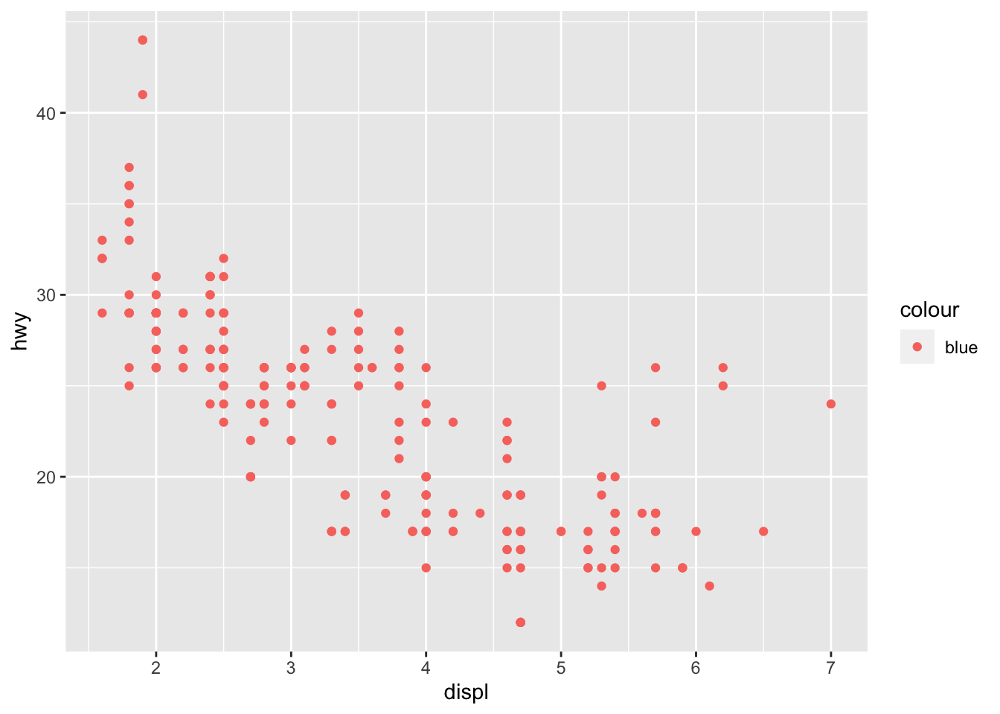 The points are not blue because the aesthetic was not set by name as an argument of the geom function (outside of the aes parenthesis).
- Which variables in mpg are categorical? Which variables are continuous? (Hint: type ?mpg to read the documentation for the dataset). How can you see this information when you run mpg?
?mpg
mpg## [38;5;246m# A tibble: 234 × 11[39m
## manufacturer model displ year cyl trans drv cty hwy fl class
## [3m[38;5;246m<chr>[39m[23m [3m[38;5;246m<chr>[39m[23m [3m[38;5;246m<dbl>[39m[23m [3m[38;5;246m<int>[39m[23m [3m[38;5;246m<int>[39m[23m [3m[38;5;246m<chr>[39m[23m [3m[38;5;246m<chr>[39m[23m [3m[38;5;246m<int>[39m[23m [3m[38;5;246m<int>[39m[23m [3m[38;5;246m<chr>[39m[23m [3m[38;5;246m<chr>[39m[23m
## [38;5;250m 1[39m audi a4 1.8 [4m1[24m999 4 auto… f 18 29 p comp…
## [38;5;250m 2[39m audi a4 1.8 [4m1[24m999 4 manu… f 21 29 p comp…
## [38;5;250m 3[39m audi a4 2 [4m2[24m008 4 manu… f 20 31 p comp…
## [38;5;250m 4[39m audi a4 2 [4m2[24m008 4 auto… f 21 30 p comp…
## [38;5;250m 5[39m audi a4 2.8 [4m1[24m999 6 auto… f 16 26 p comp…
## [38;5;250m 6[39m audi a4 2.8 [4m1[24m999 6 manu… f 18 26 p comp…
## [38;5;250m 7[39m audi a4 3.1 [4m2[24m008 6 auto… f 18 27 p comp…
## [38;5;250m 8[39m audi a4 quattro 1.8 [4m1[24m999 4 manu… 4 18 26 p comp…
## [38;5;250m 9[39m audi a4 quattro 1.8 [4m1[24m999 4 auto… 4 16 25 p comp…
## [38;5;250m10[39m audi a4 quattro 2 [4m2[24m008 4 manu… 4 20 28 p comp…
## [38;5;246m# … with 224 more rows[39mThe variables manufacturer (manufacturer), model name (model), type of transmission (trans), type of drive train (drv), fuel type (fl), and “type” of car (class) are all categorical variables. The variables engine displacement, in litres (displ), year of manufacture (year), number of cylinders (cyl), city miles per gallon (cty), and highway miles per gallon (hwy) are all continuous variables. I can see this information when I run mpg because it gives me the first 10 rows of each column, so I can visually see which type of variable it is (by whether or not it is measured in numbers or not).
- Map a continuous variable to color, size, and shape. How do these aesthetics behave differently for categorical vs. continuous variables?
# color
ggplot(data = mpg) +
geom_point(mapping = aes(x = displ, y = hwy, color = cyl))For color, the aesthetics also assign each number a particular color like it did for the categorical variable.
# size
ggplot(data = mpg) +
geom_point(mapping = aes(x = displ, y = hwy, size = cyl))For size, the aesthetics also assign each number a size like it did for the categorical variable.
# shape
#ggplot(data = mpg) +
#geom_point(mapping = aes(x = displ, y = hwy, shape = cyl))Shape cannot be mapped for a continuous variable like it could for a catergorical variable.
- What happens if you map the same variable to multiple aesthetics?
ggplot(data = mpg) +
geom_point(mapping = aes(x = displ, y = hwy, shape = class, color = class)) If you map the same variable to multiple aesthetics, it applies both of them to the variable.
If you map the same variable to multiple aesthetics, it applies both of them to the variable.
- What does the stroke aesthetic do? What shapes does it work with? (Hint: use ?geom_point)
?geom_pointThe stroke aesthetic adjusts the thickness of the border for shapes that can take on different colors both inside and outside. It only works with shapes 21-24, which are a square, circle, triangle, and diamond with an inside and outside color.
- What happens if you map an aesthetic to something other than a variable name, like aes(colour = displ < 5)? Note, you’ll also need to specify x and y.
ggplot(data = mpg) +
geom_point(mapping = aes(x = displ, y = hwy, colour = displ < 5)) __If you map an aesthetic to something other than a variable name,it creates a new variable with the results of the operation. In this exmaple, the new variable takes on a value of TRUE if the engine displacement is less than 5 or FALSE if the engine displacement is more than or equal to 5, and plots this.
__If you map an aesthetic to something other than a variable name,it creates a new variable with the results of the operation. In this exmaple, the new variable takes on a value of TRUE if the engine displacement is less than 5 or FALSE if the engine displacement is more than or equal to 5, and plots this.
3.4 Common problems
This code creates an error because the + is in the wrong spot
#ggplot(data = mpg)
#+ geom_point(mapping = aes(x = displ, y = hwy))3.5 Facets
Use facet wrap to split the plot into subplots that each display one subset of the data. Here, we are creating subplots based on the type of car.
ggplot(data = mpg) +
geom_point(mapping = aes(x = displ, y = hwy)) +
facet_wrap(~ class, nrow = 2)
You can also facet the plot on the combination of two variables, using facet grid.
ggplot(data = mpg) +
geom_point(mapping = aes(x = displ, y = hwy)) +
facet_grid(drv ~ cyl)
3.5 Exercises
- What happens if you facet on a continuous variable?
ggplot(data = mpg) +
geom_point(mapping = aes(x = drv, y = cyl)) +
facet_wrap(~displ)If you facet on a continuous variable, it would not make sense because R would make a different graph for each unique variable.
- What do the empty cells in plot with facet_grid(drv ~ cyl) mean? How do they relate to this plot?
ggplot(data = mpg) +
geom_point(mapping = aes(x = drv, y = cyl)) +
facet_grid(drv ~ cyl)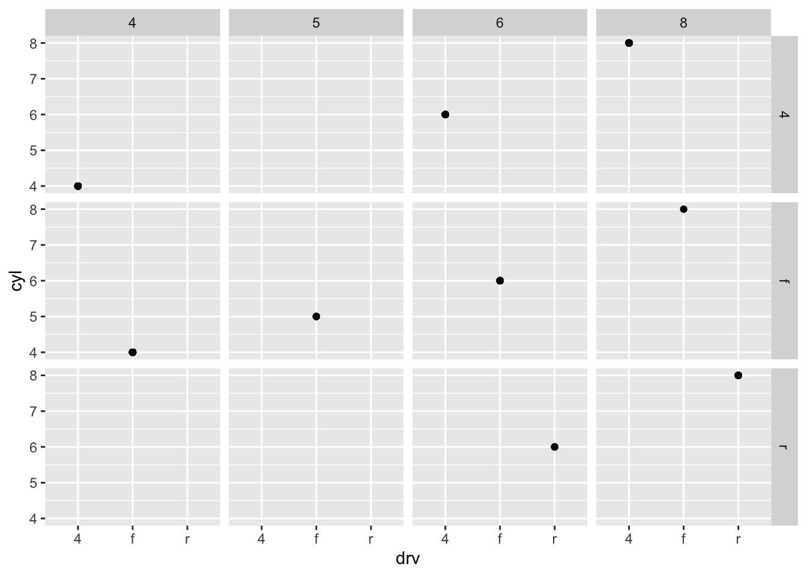 The empty cells means that there are no points for that section. For this example, there are no vehicles with 5 cylinders that are also 4 weel drives.
- What plots does the following code make? What does . do?
ggplot(data = mpg) +
geom_point(mapping = aes(x = displ, y = hwy)) +
facet_grid(drv ~ .)
ggplot(data = mpg) +
geom_point(mapping = aes(x = displ, y = hwy)) +
facet_grid(. ~ cyl) This code makes two plots of engine displacement, in litres (displ) and hwy (a car’s fuel efficiency on the highway, in miles per gallon). The . acts as a placeholder for a second variable, making the plot in one dimension instead.
This code makes two plots of engine displacement, in litres (displ) and hwy (a car’s fuel efficiency on the highway, in miles per gallon). The . acts as a placeholder for a second variable, making the plot in one dimension instead.
- Take the first faceted plot in this section: What are the advantages to using faceting instead of the colour aesthetic? What are the disadvantages? How might the balance change if you had a larger dataset?
ggplot(data = mpg) +
geom_point(mapping = aes(x = displ, y = hwy)) +
facet_wrap(~ class, nrow = 2) The advantages of using faceting instead of a color aesthetic is that it lets us clearly see only the 2 seaters, rather than the 2 seaters on the same plot as the other types of cars like color would do. The disadvantages are that it makes it harder to compare all of the other types of cars together. If I had a larger dataset, the balance might change because there may too many points that the colors would overlap and not let us fully understand the plot.
The advantages of using faceting instead of a color aesthetic is that it lets us clearly see only the 2 seaters, rather than the 2 seaters on the same plot as the other types of cars like color would do. The disadvantages are that it makes it harder to compare all of the other types of cars together. If I had a larger dataset, the balance might change because there may too many points that the colors would overlap and not let us fully understand the plot.
- Read ?facet_wrap. What does nrow do? What does ncol do? What other options control the layout of the individual panels? Why doesn’t facet_grid() have nrow and ncol arguments?
?facet_wrapNrow sets the number of rows, while ncol sets the number of columns. Using the as.table function, if it is TRUE, the facets are laid out like a table with the highest values at the bottom-right; if it is FALSE, the facets are laid out like a plot with the highest value at the top-right. Facet_grid() does not have nrow and ncol arguemnts because the number of unique values of the variables are specified in the function that determines the number of rows and columns.
- When using facet_grid() you should usually put the variable with more unique levels in the columns. Why? You should put the variable with more unquie levels because it will make the graph expand vertically, which is easier to view than horizontally which would squish the values.
3.6 Geometric Objects
To make a scatterplot in ggplot, use the point geom.
ggplot(data = mpg) +
geom_point(mapping = aes(x = displ, y = hwy))
To change the linetype in ggplot, use the smooth geom.
ggplot(data = mpg) +
geom_smooth(mapping = aes(x = displ, y = hwy))
Using geom_smooth, you could change the linetype. In this example, R will make a different line type for each type of wheel drive.
ggplot(data = mpg) +
geom_smooth(mapping = aes(x = displ, y = hwy, linetype = drv))
You can set the group aesthetic to a categorical variable to draw multiple objects
ggplot(data = mpg) +
geom_smooth(mapping = aes(x = displ, y = hwy))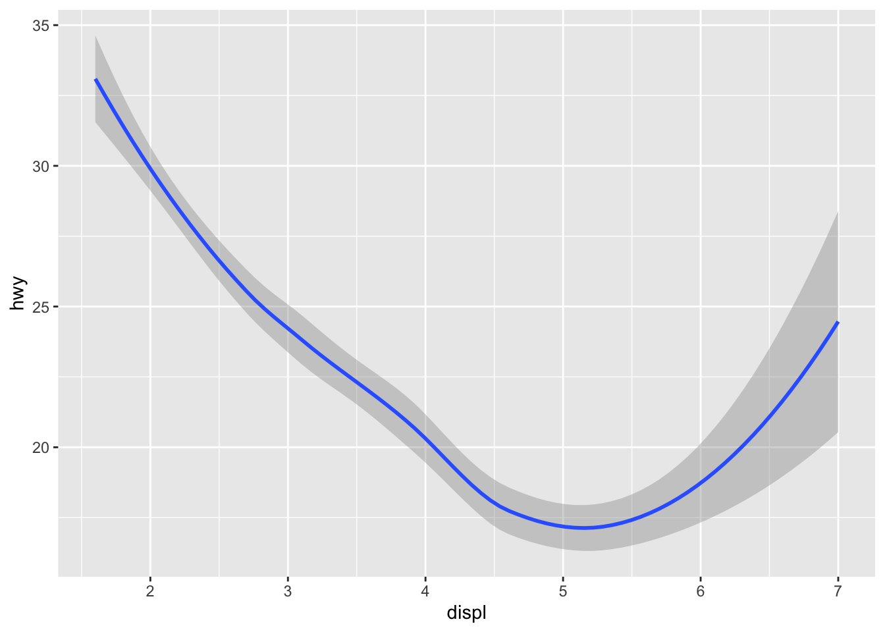
ggplot(data = mpg) +
geom_smooth(mapping = aes(x = displ, y = hwy, group = drv))
ggplot(data = mpg) +
geom_smooth(
mapping = aes(x = displ, y = hwy, color = drv),
show.legend = FALSE
)
You can also display multiple geoms in the same plot by adding multiple geom functions in ggplot
ggplot(data = mpg) +
geom_point(mapping = aes(x = displ, y = hwy)) +
geom_smooth(mapping = aes(x = displ, y = hwy))
The code above, however, introduces some duplication in the code. This can be avoided by passing a set of mappings to ggplot, which will globalize the mappings.
ggplot(data = mpg, mapping = aes(x = displ, y = hwy)) +
geom_point() +
geom_smooth()
This code makes it possible to display different aesthetics in different layers.
ggplot(data = mpg, mapping = aes(x = displ, y = hwy)) +
geom_point(mapping = aes(color = class)) +
geom_smooth()
You can also do this to specify different data for each layer. Here, the local data argument overrides the global data argument.
ggplot(data = mpg, mapping = aes(x = displ, y = hwy)) +
geom_point(mapping = aes(color = class)) +
geom_smooth(data = filter(mpg, class == "subcompact"), se = FALSE)
3.6 Exercises
What geom would you use to draw a line chart? A boxplot? A histogram? An area chart? A line chart uses geom_line, a boxplot uses geom_boxplot, a histogram uses geom_histogram, and an area chart uses geom_area.
Run this code in your head and predict what the output will look like. Then, run the code in R and check your predictions. I think that this will produce a plot with both the points and lines shown in different colors.
ggplot(data = mpg, mapping = aes(x = displ, y = hwy, color = drv)) +
geom_point() +
geom_smooth(se = FALSE)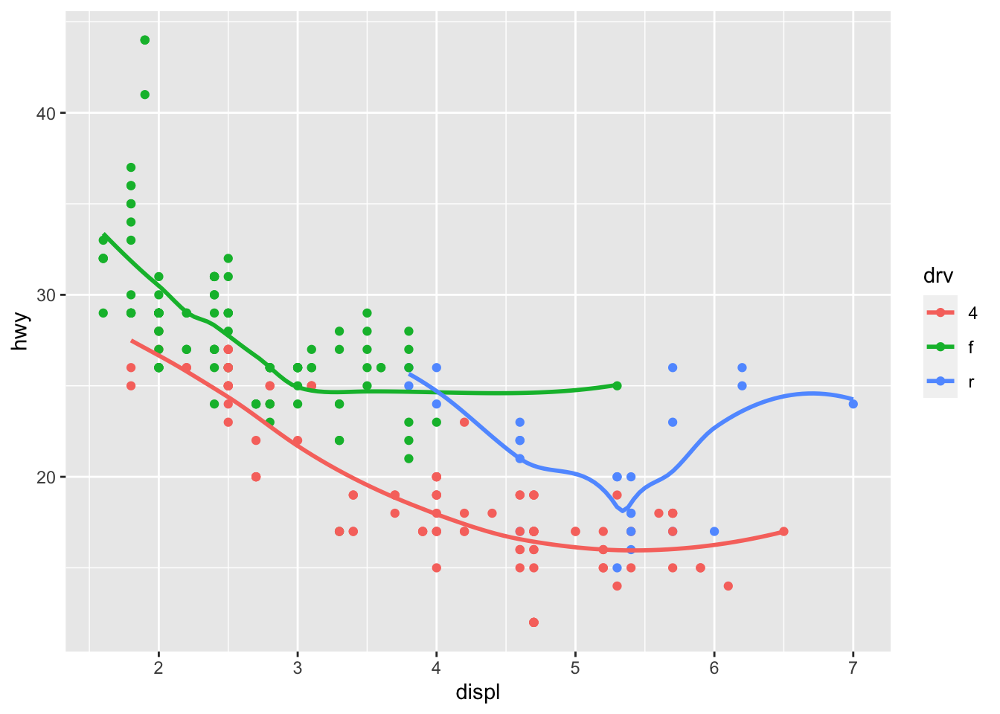 3. What does show.legend = FALSE do? What happens if you remove it? Why do you think I used it earlier in the chapter? Show.legend = FALSE removes the legend from the plot. If you remove it, the aesthestics are still mapped but the key is removed. I think this was used earlier in the chapter because three plots were plotted next together and it saved space and was less confusing to remove the key.
- What does the se argument to geom_smooth() do?
ggplot(data = mpg, mapping = aes(x = displ, y = hwy, color = drv)) +
geom_point() +
geom_smooth(se = TRUE)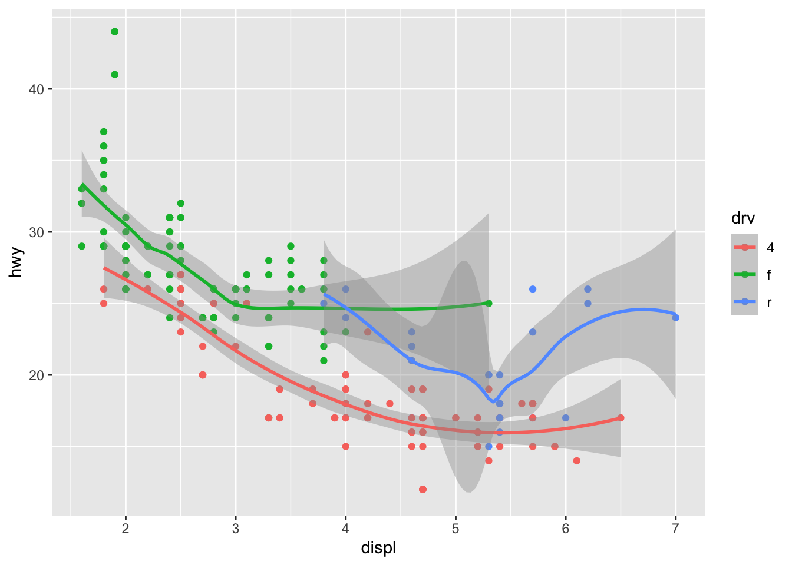 The se argument in geom_smooth, when set to true, plots the confidence intervals around the lines.
- Will these two graphs look different? Why/why not?
ggplot(data = mpg, mapping = aes(x = displ, y = hwy)) +
geom_point() +
geom_smooth()
ggplot() +
geom_point(data = mpg, mapping = aes(x = displ, y = hwy)) +
geom_smooth(data = mpg, mapping = aes(x = displ, y = hwy)) No, these two graphs will not look different. The first plot does not specifcy the two geom arguments so R applys it automatically to the plot, while the second specifies each individually.
No, these two graphs will not look different. The first plot does not specifcy the two geom arguments so R applys it automatically to the plot, while the second specifies each individually.
- Recreate the R code necessary to generate the following graphs.
ggplot(data = mpg, mapping = aes(x = displ, y = hwy)) +
geom_point() +
geom_smooth(se = FALSE)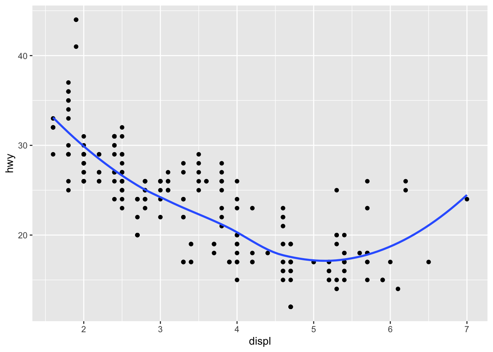
ggplot(data = mpg, mapping = aes(x = displ, y = hwy)) +
geom_smooth(aes(group = drv), se = FALSE) +
geom_point()ggplot(data = mpg, mapping = aes(x = displ, y = hwy, color = drv)) +
geom_point() +
geom_smooth(se = FALSE)
ggplot(data = mpg, mapping = aes(x = displ, y = hwy)) +
geom_point(aes(color = drv)) +
geom_smooth(se = FALSE)
ggplot(data = mpg, mapping = aes(x = displ, y = hwy)) +
geom_point(aes(color = drv)) +
geom_smooth(aes(linetype = drv), se = FALSE)ggplot(data = mpg, mapping = aes(x = displ, y = hwy)) +
geom_point(size = 4, colour = "white") +
geom_point(aes(colour = drv))3.7 Statistical transformations
Lets create a bar chart of the diamonds dataset for the cut of the diamond.
ggplot(data = diamonds) +
geom_bar(mapping = aes(x = cut))
Stat_count can also be used instead of geom_bar, as both will count the number of cuts in the data.
ggplot(data = diamonds) +
stat_count(mapping = aes(x = cut))
No we are going to override the default stat and change count to identity, which maps the height of the bars to the raw values of a y variable.
demo <- tribble(
~cut, ~freq,
"Fair", 1610,
"Good", 4906,
"Very Good", 12082,
"Premium", 13791,
"Ideal", 21551
)
ggplot(data = demo) +
geom_bar(mapping = aes(x = cut, y = freq), stat = "identity")
You can also override the default by displaying a bar chart or proportion rather than count.
ggplot(data = diamonds) +
geom_bar(mapping = aes(x = cut, y = stat(prop), group = 1))
You can also use stat_summary to summarize the y values for each unique x value to draw attention to the statistical transformation in the code.
ggplot(data = diamonds) +
stat_summary(
mapping = aes(x = cut, y = depth),
fun.min = min,
fun.max = max,
fun = median
)
3.7 Exercises
- What is the default geom associated with stat_summary()? How could you rewrite the previous plot to use that geom function instead of the stat function? The default geom is geom_pointrange. It could be written as ggplot(data = diamonds) + geom_pointrange(mapping = aes(x = cut, y = depth),stat = “summary”,fun.ymin = min,fun.ymax = max,fun.y = median) to use the geom function instead of the stat function. This would look like the plot below.
ggplot(data = diamonds) +
geom_pointrange(
mapping = aes(x = cut, y = depth),
stat = "summary",
fun.ymin = min,
fun.ymax = max,
fun.y = median
)- What does geom_col() do? How is it different to geom_bar()?
?geom_colGeom_bar uses the stat_count statistical transformation to make the bar plot, while geom_col assumes that the vaules have already been transformed to the correct values.
Most geoms and stats come in pairs that are almost always used in concert. Read through the documentation and make a list of all the pairs. What do they have in common? geom: stat: geom_bar() stat_count() geom_bin2d() stat_bin_2d() geom_boxplot() stat_boxplot() geom_contour_filled() stat_contour_filled() geom_contour() stat_contour() geom_count() stat_sum() geom_density_2d() stat_density_2d() geom_density() stat_density() geom_dotplot() stat_bindot() geom_function() stat_function() geom_sf() stat_sf() geom_sf() stat_sf() geom_smooth() stat_smooth() geom_violin() stat_ydensity() geom_hex() stat_bin_hex() geom_qq_line() stat_qq_line() geom_qq() stat_qq() geom_quantile() stat_quantile() The pairs all have their names in common and the ones used in concert often have each other as the default.
What variables does stat_smooth() compute? What parameters control its behavior?
?stat_smooth()The variables that stat_smooth() computes is y (predicted value), ymin (lower pointwise confidence interval around the mean), ymax (upper pointwise confidence interval around the mean), and se (standard error). The method controls the smoothing method to be used, the se determines whether or not the confidence interval should be plotted, and the level determines the level of the confience interval to use.
- In our proportion bar chart, we need to set group = 1. Why? In other words what is the problem with these two graphs?
ggplot(data = diamonds) +
geom_bar(mapping = aes(x = cut, y = after_stat(prop)))
ggplot(data = diamonds) +
geom_bar(mapping = aes(x = cut, fill = color, y = after_stat(prop)))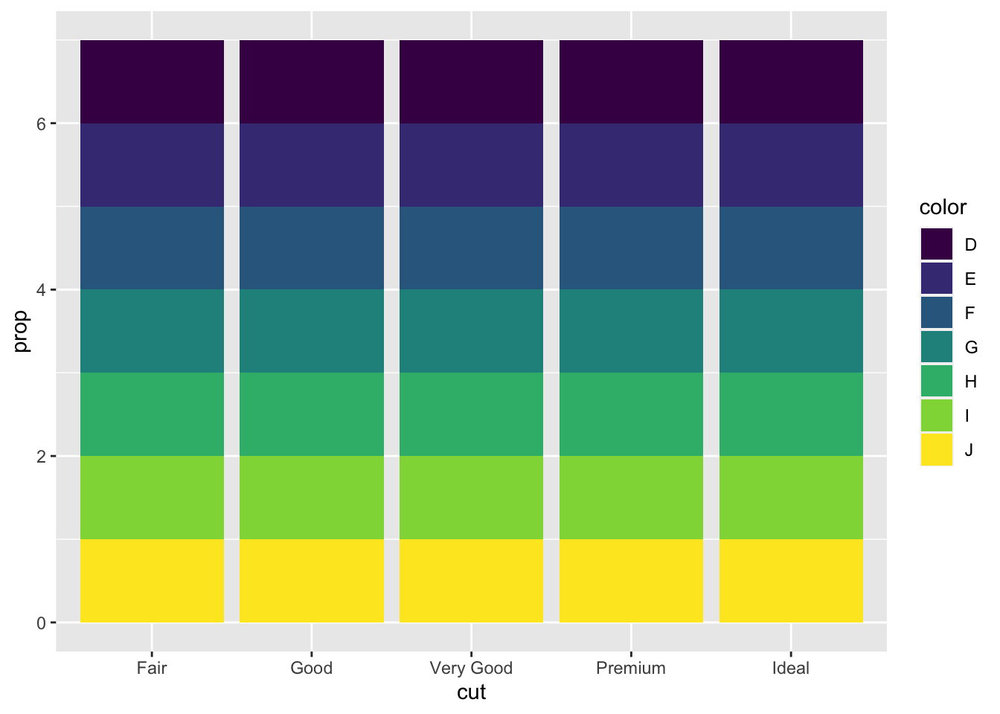 The problem with these graphs is that the proportions for each cut were calculated using the complete dataset, rather than each subset of the cut variable. This happened because we did not set group = 1.
3.8 Position adjustments
You can color a bar chart by using the color or fill aesthetic.
ggplot(data = diamonds) +
geom_bar(mapping = aes(x = cut, colour = cut))
ggplot(data = diamonds) +
geom_bar(mapping = aes(x = cut, fill = cut))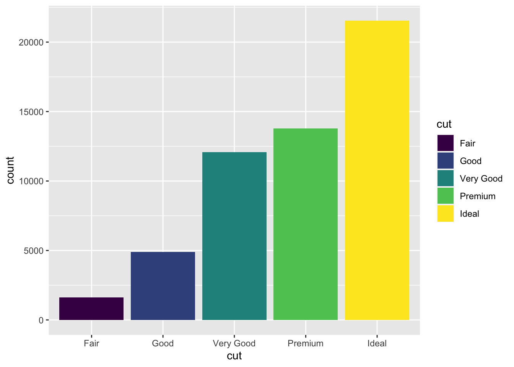 If you fill in the map with another variable, like clarity, the bars are automatically stacked.
ggplot(data = diamonds) +
geom_bar(mapping = aes(x = cut, fill = clarity)) Specifying the identity option within the position argument, it will place each object exactly where it falls in the context of the graph. This is really difficult to see with bars since it overlaps them, so the bars need to be either slightly transparent by setting alpha to a small value
Specifying the identity option within the position argument, it will place each object exactly where it falls in the context of the graph. This is really difficult to see with bars since it overlaps them, so the bars need to be either slightly transparent by setting alpha to a small value
ggplot(data = diamonds, mapping = aes(x = cut, fill = clarity)) +
geom_bar(alpha = 1/5, position = "identity") Or completly transparent by setting fill = NA.
Or completly transparent by setting fill = NA.
ggplot(data = diamonds, mapping = aes(x = cut, colour = clarity)) +
geom_bar(fill = NA, position = "identity")
Specifying the fill option within the position argument, it makes each set of stacked bars the same height (making it easier to compare proportions across groups).
ggplot(data = diamonds) +
geom_bar(mapping = aes(x = cut, fill = clarity), position = "fill")
Specifying the dodge option within the position argument,it places overlapping objects directly beside one another.
ggplot(data = diamonds) +
geom_bar(mapping = aes(x = cut, fill = clarity), position = "dodge")
One problem with making a scatterplot with large amounts of data is that overplotting may happen, which overlaps the points with each other. To fix this, you could set the position adjustment to jitter to add a small amount of random noise to each point, spreading them out.
ggplot(data = mpg) +
geom_point(mapping = aes(x = displ, y = hwy), position = "jitter")3.8 Exercises
- What is the problem with this plot? How could you improve it?
ggplot(data = mpg, mapping = aes(x = cty, y = hwy)) +
geom_point() The problem with this plot is that many of the points overlap so not all of them are plotted. This could be improved by adding random jitter to the plot.
The problem with this plot is that many of the points overlap so not all of them are plotted. This could be improved by adding random jitter to the plot.
What parameters to geom_jitter() control the amount of jittering? Width and height control the amount of jittering.
Compare and contrast geom_jitter() with geom_count().
ggplot(data = mpg, mapping = aes(x = cty, y = hwy)) +
geom_jitter()ggplot(data = mpg, mapping = aes(x = cty, y = hwy)) +
geom_count() Geom_count counts the number of observations at each point and then maps the count to the point area, making larger points more obvious, while geom_jitter creats random noise.
Geom_count counts the number of observations at each point and then maps the count to the point area, making larger points more obvious, while geom_jitter creats random noise.
- What’s the default position adjustment for geom_boxplot()? Create a visualization of the mpg dataset that demonstrates it. The default position adjustment is position_dodge.
ggplot(data = mpg, mapping = aes(x = class, y = hwy, color = drv)) +
geom_boxplot(position = "dodge")3.9 Coordinate systems
You can use the coord_flip function to switch the x and y axes. This is the plot before
ggplot(data = mpg, mapping = aes(x = class, y = hwy)) +
geom_boxplot()
And after.
ggplot(data = mpg, mapping = aes(x = class, y = hwy)) +
geom_boxplot() +
coord_flip()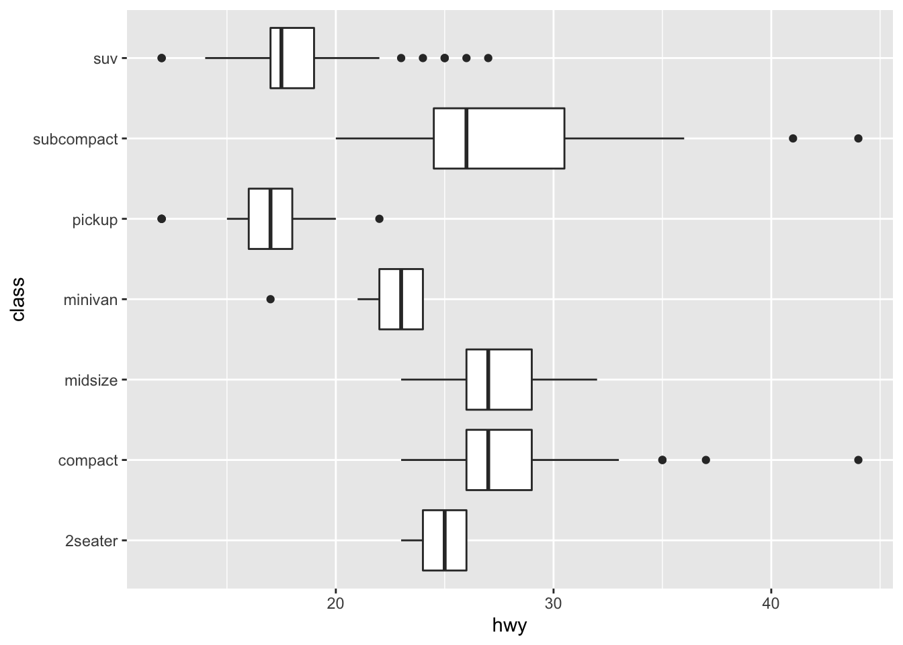
The function coord_quickmap sets the aspect ratio correctly for maps. This is the incorrect map
nz <- map_data("nz")
ggplot(nz, aes(long, lat, group = group)) +
geom_polygon(fill = "white", colour = "black")
This is the correct map using the coord_quickmap function.
ggplot(nz, aes(long, lat, group = group)) +
geom_polygon(fill = "white", colour = "black") +
coord_quickmap()
Similarly, coord_polar uses polar coordinates which revel a connection between a bar chart and a coxcomb chart. This is the plot with coord_flip.
bar <- ggplot(data = diamonds) +
geom_bar(
mapping = aes(x = cut, fill = cut),
show.legend = FALSE,
width = 1
) +
theme(aspect.ratio = 1) +
labs(x = NULL, y = NULL)
bar + coord_flip()
And this is the plot with coord_polar.
bar + coord_polar()
3.9 Exercises
- Turn a stacked bar chart into a pie chart using coord_polar().
ggplot(data = mpg, mapping = aes(x = factor(1), fill = class)) +
geom_bar(width = 1) +
coord_polar(theta = "y")- What does labs() do? Read the documentation.
?labs()Labs adds labels to a graph, such as a title, subtitle, and x and y axes labels.
- What’s the difference between coord_quickmap() and coord_map()?
?coord_quickmap()
?coord_map()Coord_map projects the earth onto a flat plane without preserving straight lines. Coord_quickmap can do the projection with preserving straight lines and is faster to draw, but less accurate.
- What does the plot below tell you about the relationship between city and highway mpg? Why is coord_fixed() important? What does geom_abline() do?
ggplot(data = mpg, mapping = aes(x = cty, y = hwy)) +
geom_point() +
geom_abline() +
coord_fixed()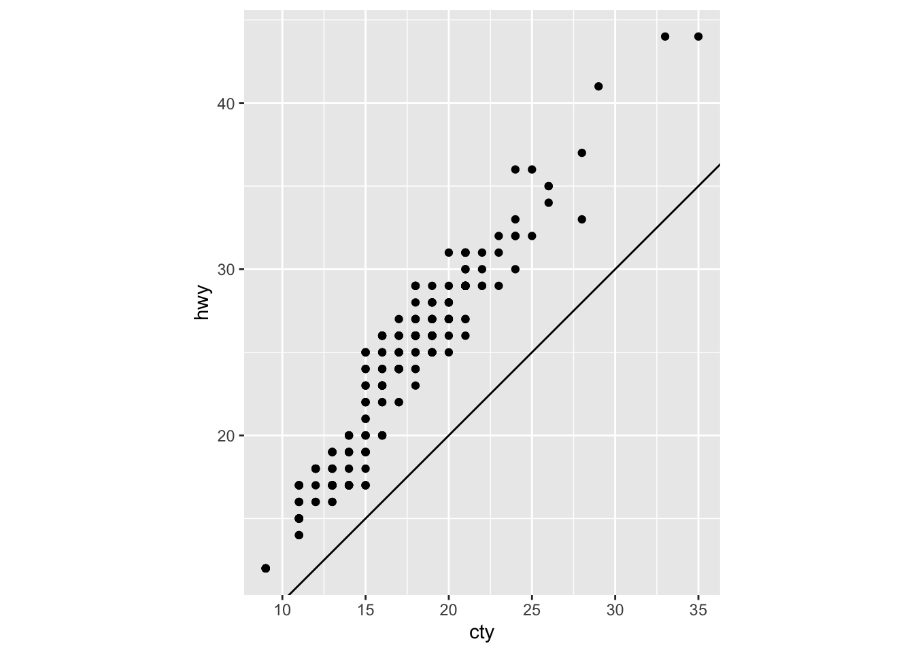 The plot tell us that city miles per gallon increases, the car’s fuel efficiency on the highway, in miles per gallon, increase. The coord_fixed is important because it draws equal intervals on the x and y axes so they are directly comparable. The geom_abline adds the straight line to the plot.
3.10 The layered grammar of graphics
Lets add everything we have learned so far to the template.
#ggplot(data = <DATA>) +
#<GEOM_FUNCTION>(
# mapping = aes(<MAPPINGS>),
# stat = <STAT>,
# position = <POSITION>
# ) +
# <COORDINATE_FUNCTION> +
# <FACET_FUNCTION>Chapter 28 Graphics for communication
28.2 Label
The best place to start in making an easy to read graph is using good labels. You can do this with the labs function.
ggplot(mpg, aes(displ, hwy)) +
geom_point(aes(color = class)) +
geom_smooth(se = FALSE) +
labs(title = "Fuel efficiency generally decreases with engine size")
If you need to add more information to the title of the graph, you can use a subtitle and caption as well.
ggplot(mpg, aes(displ, hwy)) +
geom_point(aes(color = class)) +
geom_smooth(se = FALSE) +
labs(
title = "Fuel efficiency generally decreases with engine size",
subtitle = "Two seaters (sports cars) are an exception because of their light weight",
caption = "Data from fueleconomy.gov"
)
You can also use the labs function to replace the axis and legend titles.
ggplot(mpg, aes(displ, hwy)) +
geom_point(aes(colour = class)) +
geom_smooth(se = FALSE) +
labs(
x = "Engine displacement (L)",
y = "Highway fuel economy (mpg)",
colour = "Car type"
)
If you want to use mathematical equations instead of labels, you can switch the "" out for quote().
df <- tibble(
x = runif(10),
y = runif(10)
)
ggplot(df, aes(x, y)) +
geom_point() +
labs(
x = quote(sum(x[i] ^ 2, i == 1, n)),
y = quote(alpha + beta + frac(delta, theta))
)#### 28.2 Exercises
- Create one plot on the fuel economy data with customized title, subtitle, caption, x, y, and color labels.
ggplot(mpg, aes(displ, hwy)) +
geom_point() +
geom_smooth(method = "lm", se = FALSE) +
labs(
title = "Fuel Efficiency Decreases with Engine Size",
caption = "Data from fueleconomy.gov",
y = "Highway Miles per Gallon",
x = "Engine Displacement"
)- The geom_smooth() is somewhat misleading because the hwy for large engines is skewed upwards due to the inclusion of lightweight sports cars with big engines. Use your modeling tools to fit and display a better model. A better way to display this datter is to control the span to a more linear trend, using the following code.
ggplot(mpg, aes(displ, hwy)) +
geom_point(aes(color = class)) +
geom_smooth(se = FALSE, method = "lm") +
labs(
x = "Engine displacement (L)",
y = "Highway fuel economy (mpg)",
color = "Car type",
title = paste(
"Fuel efficiency generally decreases with",
"engine size"
),
subtitle = paste(
"Two seaters (sports cars) are an exception",
"because of their light weight"
),
caption = "Data from fueleconomy.gov"
)- Take an exploratory graphic that you’ve created in the last month, and add informative titles to make it easier for others to understand.
#looking at the fatal police shooting data from exam 1
dat <- read.csv(file = "/Users/briannafisher/Dropbox/CRIM250/CRIM 250 Github/BriannaFisher/data/fatal-police-shootings-datacopy.csv")
ggplot(dat, aes(fill=body_camera, y=frequency(body_camera), x=flee)) +
geom_bar(position="stack", stat="identity") +
ggtitle("Stacked Barplot of Body Camera Usage and Victim Fleeing") +
labs(y="Frequency of Body Camera Usage", x = "How the Victim Fled", subtitle = "The dataset is made up of every fatal police shooting in the US since January 1, 2015")
labs(fill = "Body Camera Usage")## $fill
## [1] "Body Camera Usage"
##
## attr(,"class")
## [1] "labels"28.3 Annotations
You could use the geom_text function to add textual labels to the plot. The following code pulls out the most efficient car in each class with dplyr, and then labels it on the plot.
best_in_class <- mpg %>%
group_by(class) %>%
filter(row_number(desc(hwy)) == 1)
ggplot(mpg, aes(displ, hwy)) +
geom_point(aes(colour = class)) +
geom_text(aes(label = model), data = best_in_class)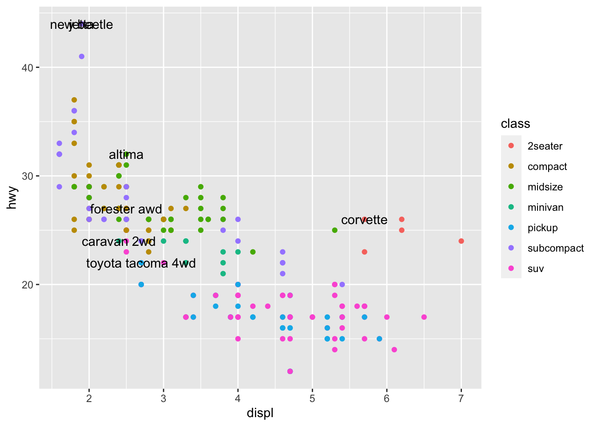
This is really difficult to read, so we can make it easier with the geom_label function to draw a rectangle behind the box and the nudge_y parameter to move the labels slightly above the corresponding points.
ggplot(mpg, aes(displ, hwy)) +
geom_point(aes(colour = class)) +
geom_label(aes(label = model), data = best_in_class, nudge_y = 2, alpha = 0.5)
We can use the ggrepel package to automatically adjust the labels so that they do not overlap.
#install.packages("ggrepel")
#library(ggrepel)
ggplot(mpg, aes(displ, hwy)) +
geom_point(aes(colour = class)) +
geom_point(size = 3, shape = 1, data = best_in_class) +
ggrepel::geom_label_repel(aes(label = model), data = best_in_class)You can also replace the legend with labels places directly on the plot.
class_avg <- mpg %>%
group_by(class) %>%
summarise(
displ = median(displ),
hwy = median(hwy)
)
#> `summarise()` ungrouping output (override with `.groups` argument)
ggplot(mpg, aes(displ, hwy, colour = class)) +
ggrepel::geom_label_repel(aes(label = class),
data = class_avg,
size = 6,
label.size = 0,
segment.color = NA
) +
geom_point() +
theme(legend.position = "none")You can add a single label to the plot instead, and need to create a new data frame using summarize to compute the maximum values of x and y.
label <- mpg %>%
summarise(
displ = max(displ),
hwy = max(hwy),
label = "Increasing engine size is \nrelated to decreasing fuel economy."
)
ggplot(mpg, aes(displ, hwy)) +
geom_point() +
geom_text(aes(label = label), data = label, vjust = "top", hjust = "right")
You can also include +inf and -inf to place the text exactly on the borders of the plot, and tibble to create the data frame since we are no longer computing the positions from mpg.
label <- tibble(
displ = Inf,
hwy = Inf,
label = "Increasing engine size is \nrelated to decreasing fuel economy."
)
ggplot(mpg, aes(displ, hwy)) +
geom_point() +
geom_text(aes(label = label), data = label, vjust = "top", hjust = "right")
Another way to do this is to add stringr::str_wrap() to automatically add line breaks
"Increasing engine size is related to decreasing fuel economy." %>%
stringr::str_wrap(width = 40) %>%
writeLines()## Increasing engine size is related to
## decreasing fuel economy.#> Increasing engine size is related to
#> decreasing fuel economy.28.3 Exercises
- Use geom_text() with infinite positions to place text at the four corners of the plot.
label_text <- tibble(
displ = c(-Inf, -Inf, Inf, Inf),
hwy = c(Inf, -Inf, Inf, -Inf),
hjust = c("left", "left", "right", "right"),
vjust = c("top", "bottom", "top", "bottom"),
text = c("This is top left",
"This is bottom left",
"This is top right",
"This is bottom right")
)
ggplot(mpg, aes(displ, hwy)) +
geom_point() +
geom_text(aes(hjust = hjust, vjust = vjust, label = text), data = label_text)- Read the documentation for annotate(). How can you use it to add a text label to a plot without having to create a tibble?
?annotate()You can use the annotate function to add a text label to a plot without having to create a tibble by using aesthetic mappings directly as arguments.
How do labels with geom_text() interact with faceting? How can you add a label to a single facet? How can you put a different label in each facet? (Hint: think about the underlying data.) If the facet variable is not specified, the text is drawn in all facets. To add a label to a single facet, you can add a column to the label data frame with the value of the faceting variable(s) in which to draw it. To put a different label in each facet, you can just put in the variable that you want the labels to come from.
What arguments to geom_label() control the appearance of the background box? The label.padding argument puts a padding around the label, the label.r argument determines the amount of rounding in the corners, and the label.size argument changes the size of the label border.
What are the four arguments to arrow()? How do they work? Create a series of plots that demonstrate the most important options. The four arguments are angle (angle of arrow head), length (length of the arrow head), ends (ends of the line to draw arrow head), and type (open or close: whether the arrow head is a closed or open triangle).
#specifying the arrow length
mpg %>%
ggplot(aes(displ, hwy)) +
geom_point() +
geom_segment(x = 3, xend = 4, y = 30, yend = 40,
arrow = arrow())#specifying a closed type
mpg %>%
ggplot(aes(displ, hwy)) +
geom_point() +
geom_segment(x = 3, xend = 4, y = 30, yend = 40,
arrow = arrow(type = "closed"))#specifying the angle
mpg %>%
ggplot(aes(displ, hwy)) +
geom_point() +
geom_segment(x = 3, xend = 4, y = 30, yend = 40,
arrow = arrow(angle = 160))#specifying the ends
mpg %>%
ggplot(aes(displ, hwy)) +
geom_point() +
geom_segment(x = 3, xend = 4, y = 30, yend = 40,
arrow = arrow(ends = "first"))28.4 Scales
ggplot will automatically add scales to the plot
ggplot(mpg, aes(displ, hwy)) +
geom_point(aes(colour = class))
This is what R does behind the scenes
ggplot(mpg, aes(displ, hwy)) +
geom_point(aes(colour = class)) +
scale_x_continuous() +
scale_y_continuous() +
scale_colour_discrete()
Breaks controls the position of the ticks, or the values associated with the keys.
ggplot(mpg, aes(displ, hwy)) +
geom_point() +
scale_y_continuous(breaks = seq(15, 40, by = 5))
You can set the labels to null to suppress the labels altogether.
ggplot(mpg, aes(displ, hwy)) +
geom_point() +
scale_x_continuous(labels = NULL) +
scale_y_continuous(labels = NULL)
You can also use breaks for when there are relatively few data points and you want to highlight exactly where the observations occur. We can highlight this with data on when each US president syatyed and ended their term.
presidential %>%
mutate(id = 33 + row_number()) %>%
ggplot(aes(start, id)) +
geom_point() +
geom_segment(aes(xend = end, yend = id)) +
scale_x_date(NULL, breaks = presidential$start, date_labels = "'%y")
You can use the theme setting to control wherere the legen is drawn.
base <- ggplot(mpg, aes(displ, hwy)) +
geom_point(aes(colour = class))
base + theme(legend.position = "left")
base + theme(legend.position = "top")
base + theme(legend.position = "bottom")
base + theme(legend.position = "right") # the default
You can also uses guides to control the display of individual legends. This code shows how to use nrow to control the number of rows the legend uses and how to override one of the aesthetics to make the points bigger (which is useful if there is a low alpha).
ggplot(mpg, aes(displ, hwy)) +
geom_point(aes(colour = class)) +
geom_smooth(se = FALSE) +
theme(legend.position = "bottom") +
guides(colour = guide_legend(nrow = 1, override.aes = list(size = 4)))
#> `geom_smooth()` using method = 'loess' and formula 'y ~ x'You can also replace the scale by transforming the data. In the code below, this looks at carat and price with no transformation.
ggplot(diamonds, aes(carat, price)) +
geom_bin2d()
Now, this code has the log of carat and price.
ggplot(diamonds, aes(log10(carat), log10(price))) +
geom_bin2d()
You can also do this transformation with the scale so that the aes are labelled on the original data scale.
ggplot(diamonds, aes(carat, price)) +
geom_bin2d() +
scale_x_log10() +
scale_y_log10()
You can also customize color, with the second plot being the shades of red and green that can be distinguished by people with red-green color blindness.
ggplot(mpg, aes(displ, hwy)) +
geom_point(aes(color = drv))
ggplot(mpg, aes(displ, hwy)) +
geom_point(aes(color = drv)) +
scale_colour_brewer(palette = "Set1")
If there are only a few colors, you can also add shapes to the plot.
ggplot(mpg, aes(displ, hwy)) +
geom_point(aes(color = drv, shape = drv)) +
scale_colour_brewer(palette = "Set1")
Looking at the example from before with US presidents, you can change the color to see what party the president was.
presidential %>%
mutate(id = 33 + row_number()) %>%
ggplot(aes(start, id, colour = party)) +
geom_point() +
geom_segment(aes(xend = end, yend = id)) +
scale_colour_manual(values = c(Republican = "red", Democratic = "blue"))
If you want a continuous color, you can use a built in scale color gradient.
#install.packages("hexbin")
#library(hexbin)
df <- tibble(
x = rnorm(10000),
y = rnorm(10000)
)
ggplot(df, aes(x, y)) +
geom_hex() +
coord_fixed()
ggplot(df, aes(x, y)) +
geom_hex() +
viridis::scale_fill_viridis() +
coord_fixed()28.4 Exercises
- Why doesn’t the following code override the default scale?
ggplot(df, aes(x, y)) +
geom_hex() +
scale_colour_gradient(low = "white", high = "red") +
coord_fixed()The following code does not override the default scale because the colors in geom_hex are set by fill, not color. The correct code would be the following.
ggplot(df, aes(x, y)) +
geom_hex() +
scale_fill_gradient(low = "white", high = "red") +
coord_fixed()What is the first argument to every scale? How does it compare to labs()? The first argument to every scale is the label for what the scale is being applied to (such as the x-axis). This is the equivalent of the labs() argument.
Change the display of the presidential terms by:
- Combining the two variants shown above.
- Improving the display of the y axis.
- Labeling each term with the name of the president.
- Adding informative plot labels.
- Placing breaks every 4 years (this is trickier than it seems!).
presidential %>%
mutate(id = 33L + row_number()) %>%
ggplot(aes(start, id, colour = party)) +
geom_point() +
geom_segment(aes(xend = end, yend = id)) +
geom_text(aes(label = name), vjust = "bottom", nudge_y = 0.2)+
scale_colour_manual(values = c(Republican = "red", Democratic = "blue"))+
scale_x_date("Year in 20th and 21st century", date_breaks = "4 years", date_labels = "'%y")+
# scale_x_date(NULL, breaks = presidential$start, date_labels = "'%y")+
scale_y_continuous(breaks = c(36, 39, 42), labels = c("36th", "39th", "42nd"))+
labs(y = "President number", x = "Year")
- Use override.aes to make the legend on the following plot easier to see.
ggplot(diamonds, aes(carat, price)) +
geom_point(aes(colour = cut), alpha = 1/20)This should be the correct code below.
ggplot(diamonds, aes(carat, price)) +
geom_point(aes(colour = cut), alpha = 1 / 20) +
guides(color = guide_legend(nrow = 1, override.aes = list(alpha = 1)))### 28.5 Zooming
There are three ways to control the plot limits: adjusting what data are plotted, setting the limits in each scale, and setting xlim and ylim in coord_cartesian.
Here is a plot adjusting where the data are plotted
mpg %>%
filter(displ >= 5, displ <= 7, hwy >= 10, hwy <= 30) %>%
ggplot(aes(displ, hwy)) +
geom_point(aes(color = class)) +
geom_smooth()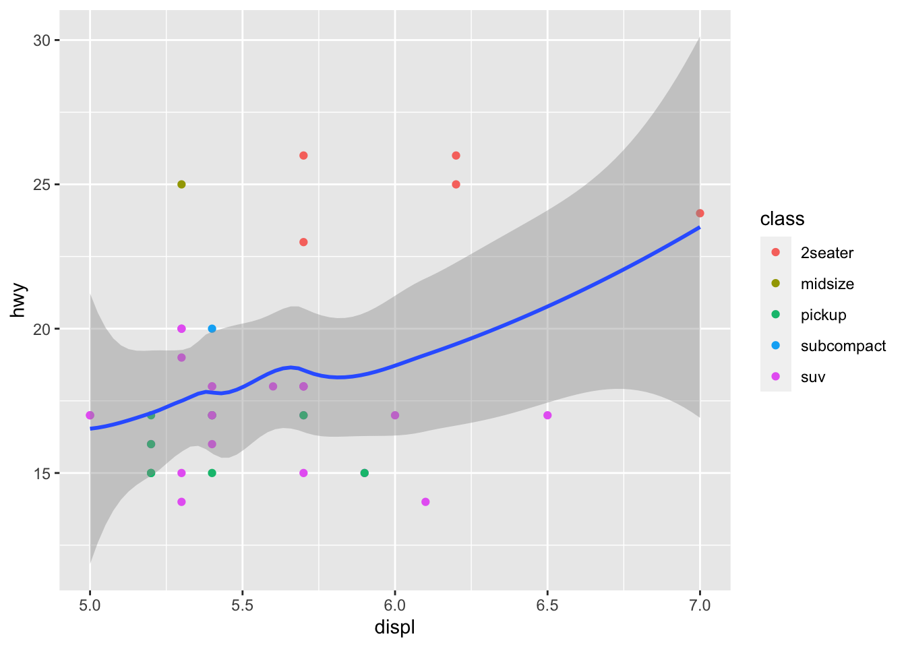
And here is a plot with the coord_cartesian function
ggplot(mpg, mapping = aes(displ, hwy)) +
geom_point(aes(color = class)) +
geom_smooth() +
coord_cartesian(xlim = c(5, 7), ylim = c(10, 30))
You can also set limits on individual scales, which is helpful to compare different datasets or variables. Here is what what happen if you did not change the individual scales.
Plot 1:
suv <- mpg %>% filter(class == "suv")
compact <- mpg %>% filter(class == "compact")
ggplot(suv, aes(displ, hwy, colour = drv)) +
geom_point()
Plot 2:
ggplot(compact, aes(displ, hwy, colour = drv)) +
geom_point() Here are the plots with scale limits.
Here are the plots with scale limits.
Plot 1:
x_scale <- scale_x_continuous(limits = range(mpg$displ))
y_scale <- scale_y_continuous(limits = range(mpg$hwy))
col_scale <- scale_colour_discrete(limits = unique(mpg$drv))
ggplot(suv, aes(displ, hwy, colour = drv)) +
geom_point() +
x_scale +
y_scale +
col_scale
Plot 2:
ggplot(compact, aes(displ, hwy, colour = drv)) +
geom_point() +
x_scale +
y_scale +
col_scale
28.6 Themes
You can also change the themes of your plots to make them different colors.
Here is a plot with a white background with black gridlines.
ggplot(mpg, aes(displ, hwy)) +
geom_point(aes(color = class)) +
geom_smooth(se = FALSE) +
theme_bw()
28.7 Saving your plots
In order to slave your plot, you can use the ggsave() function.
ggplot(mpg, aes(displ, hwy)) + geom_point()
This will save it to my most recent folder.
ggsave("my-plot.pdf")There are different ways to change the figure size (fig.width, fig.height, fig.arp, out.width, and out.height), but these are the most helpful: 1. setting fig.width = 6 and fig.asp = 0.618 (the golden ratio in the default) 2. setting out.width = 70% and fig.align = center 3. when plotting multiple points in a a single row, set fig.align to default and - for two plots, setting out.width = 50% - for three plots, setting out.width = 33% - for four plots, setting out.width = 25%
Final Project
Marijuana Possession Charges
An exploratory look at the relationship between race and sentencing outcomes
By Brianna Fisher, Sophie Faircloth, Anna Sophia Lotman, Hannah Wassermann
INTRODUCTION
Following Nixon’s call for the War on Drugs in June 1971, there was a push for mandatory sentencing in drug-related crimes, effectively expanding the role of the federal government in drug-related arrests and sentencing (Drug Policy Alliance, 2021). Recently, there has been an uptick of discussion in the political world and in pop culture of the United States on the War on Drugs, namely regarding the adjustment of the severity of sentencing and its disproportionate effect on minority communities. These racial disparities are particularly discussed in regards to marijuana-related charges, as Black Americans have been found to be four times more likely to be arrested for marijuana charges than White Americans and six times more likely to be incarcerated for drug-related charges (Rahamatulla, 2017). Many agree that a solution to the disproportionate effects of drug-related charges needs to be created, and through the work discussed in this paper, we hope to focus our attention on sentencing outcomes and race for marijuana charges to further understand where disparities lie. Due to the increasing prevalence and history of drug-related sentencing, we wanted to examine the relationships in drug-related sentencing between race and sentencing likelihood, especially focusing on marijuana. We expect, from past studies examined in and outside of this course, that the rate of prison sentencing for Black people would be higher than the rate of prison sentencing of white people. These motivations lead to the research question: Are Black people sentenced federally to prison for marijuana at a higher rate than white people?
DESCRIPTION OF THE DATA USED
The data set we utilized for this review is a record of federal criminal sentences as provided by the US Sentencing Committee (United States Sentencing Commission, 2007). This data set includes information on federal cases sentenced under the guidelines of the Sentencing Reform Act of 1984. Because of the research question prompting this paper, we chose to look at only cases where the defendant was charged with possession of marijuana. We used the “Drug Type 1” variable in the dataset to create a subset with these cases, as this variable indicated that marijuana was the highest penalty incurring drug the defendant was found with. Because we wanted to look at the relationship between race and being sentenced to prison, our independent variable was the defendant’s race (either Black or white cases) and our dependent variable was the type of sentence (either prison or no prison). We extrapolated specifically Black and white instantiations in the race variable so as to control for the number of independent variables being observed. We also decided to control for the defendant’s age, the defendant’s gender, and whether or not the defendant has a criminal record. We thought that these three variables would be the most influential in determining sentence type, both as legal (criminal record) and extralegal (age and gender) variables.
EXPLORATORY DATA ANALYSIS
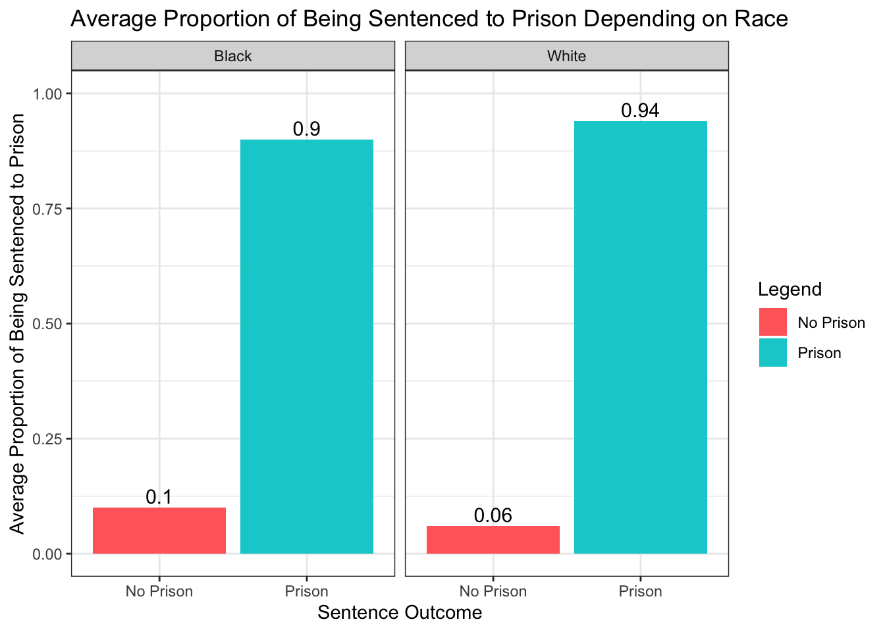 To most successfully represent the variables being examined in this paper, we chose to create a bar plot representing the proportion of people sentenced and not sentenced to prison for both races included in the dataset.
REPRESENTATIVE MODEL AND DIAGNOSTIC INFORMATION
For the sake of our data set, we used a logistic regression. A logistic regression model is very similar to a linear regression; however, it is used to evaluate relationships between binary variables. Because our variables - race and sentencing outcome - both have only two options for the purpose of our study, we can examine this relationship between the binaries. Rather than a standard line, the graph of fit is a logit. The application of this model is to categorical variables, and the dependent variable matches the variable type of the independent.
LOGISTIC REGRESSION ASSUMPTIONS
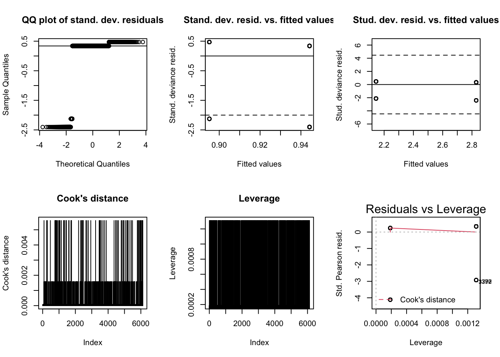
For the sake of our data set, we used a logistic regression. A logistic regression model is very similar to a linear regression; however, it is used to evaluate relationships between binary variables. Because our variables - race and sentencing outcome - both have only two options for the purpose of our study, we can examine this relationship between the binaries. Rather than a standard line, the graph of fit is a logit. The application of this model is to categorical variables, and the dependent variable matches the variable type of the independent.
The Residual vs. Fitted Plots in this figure look to see if there are any curvilinear trends in the plots that were originally missed. Because logistic regression is already curvilinear - as demonstrated by the logit that was previously displayed - these plots do not tell us any definitive information on the validity of this regression.
The QQ plot in the figure determines if the residuals are normally distributed. This plot is not indicative of anything definitive either because residuals do not have to be normally distributed in a logistic regression.
The Residuals vs. Leverage plots help identify outliers, but this plot too is not particularly useful because the results are not definitive either. From the models demonstrated in the assumptions, we do not gain information that definitively determines the strength of the logistic regression model for our data set, but the assumption display is crucial to data analysis so as to examine any particularly significant data that strays from the norm.
Regression Model
##
## Logistic Regression Outputs
## ================================================
## Dependent variable:
## ----------------------------
## prison
## Baseline Controls
## (1) (2)
## ------------------------------------------------
## Black -0.684*** -0.845***
## (0.132) (0.140)
##
## Ages 70-97 0.260
## (1.036)
##
## Ages 50-69 0.100
## (0.207)
##
## Ages 30-49 0.441***
## (0.116)
##
## Female -1.194***
## (0.120)
##
## No Criminal History 0.071
## (0.117)
##
## Constant 2.829*** 2.881***
## (0.060) (0.102)
##
## ------------------------------------------------
## Observations 6,123 6,123
## ================================================
## Note: *p<0.1; **p<0.05; ***p<0.01Looking at the baseline regression, we can see that Black people in the dataset were less likely to be sentenced to prison at a significant rate. Similarly, looking at the controlled regression, we can see that Black people were more likely to not be sentenced when compared to white people in the dataset. We split the age variable into three groups (of 16-29, 30-49, 50-69, and 70-97), leaving the 16-29 group out of the regression as our control because we thought that this group would be most likely to be in possession of marijuana. To our surprise, all three age groups were more likely to be sentenced to prison for marijuana charges than people that were 16-29. This may be due to the fact that there could have been more people in these other groups, or there could have been a large number of minors in the 16-29 group that were not sentenced to prison. We split the gender variable into male or female, leaving out the male group since we thought that this group would be more likely to be sentenced to prison. Looking at the model, we can see that this is true, and females were significantly less likely to be sentenced to prison than males. Finally, we split the criminal history variable into yes or no groups, leaving out the yes group since we thought that this group would be more likely to be sentenced to prison. To our surprise, having no criminal history made the defendant more likely to be sentenced to prison, but by an insignificant amount.
CAUSAL ANALYSIS
Because we used the “Drug Type 1” variable, we assumed that the defendant was either only found with marijuana or the other drug(s) did not incur any penalty. This did not take into account whether or not the defendant was charged with something incurring a felony charge, such as possession of drug paraphernalia or intent to sell. In an ideal world, our data would have been clear about what the defendant was actually charged with on all fronts, rather than just what drugs they were in possession of at the time of their arrest. We also only looked at about 6,000 observations, since we dropped everyone who was not Black or white. However, there were more white people in the dataset and more white people in prison in the dataset, so the groups may not have been proportional.
DAG:
BEING ARRESTED
^ |
| v
RACE -------> BEING SENTENCED TO PRISONAdditionally, the DAG portrays the situation where the defendant’s race determines whether or not they will be arrested, and therefore the arrest determines whether they will be sentenced. Not everyone who is caught with marijuana is arrested, and not everyone who is arrested for marijuana charges is convicted. Similarly, the biases of the police and prosecutors could be at play, influencing both the arrest and sentence outcome. Because of these confounders, we would not be able to conclude that there was a causal analysis.
LIMITATIONS AND FUTURE DIRECTIONS
While setting out to examine sentencing outcomes and their relationship to race for marijuana-related charges, we observed a series of confounds:
- Sentencing charges are not equated to arrests. It is worth looking in the future into the relationship between arrests and race for marijuana-related charges.
- Our analysis did not include sentencing duration. Sentencing severity is a large component of the discussion for racial disparities in sentencing, not just the binary of whether someone was sentenced or not.
- Though we controlled for different factors such as past arrests because they are crucial in determining sentencing outcomes they should be analyzed further in conjunction with the information we observed for future studies.
This dataset is also a really interesting example of how a failure through data analysis can lead to false projections and misleading statistics. This is also a useful showcase of how easily data can also be manipulated depending on the neglect of specific outliers or parameters for the research. As previously stated, this data set is very limited. We don’t feel it can answer our research question in an accurate way, but it still provides a good lesson on the sensitivity of datasets with outlying variables and unobserved confounders.
For future research, it could be extremely valuable to look at the current different sentencing rates across states with different laws regarding the legality and decriminalization of marijuana. All marijuana usage (whether medical or recreational) is a federal crime, so theoretically everyone in the dataset should have been arrested regardless of race. However, this is not the case, and it is important to look at how there are disparities between federal and state sentences. Additionally, state police and prosecutors have much more discretion in deciding who to arrest, and what crimes to charge. We also were only able to look at sentencing as a binary factor without the important information of arrests records in general or whether or not the defendant has been arrested for marijuana in the past. In the future, we want to do a more well-rounded in-depth data analysis including everyone who was arrested (regardless of their conviction status), as well as the state’s current laws regarding marijuana.
References
Commission, U. S. S. (2014, June 25). Monitoring of federal criminal sentences, [united states], 2007. Monitoring of Federal Criminal Sentences, [United States], 2007. Retrieved December 12, 2021, from https://www.icpsr.umich.edu/web/NACJD/studies/22623. Cusick Director, J., Cusick, J., Director, Director, C. M. A., Montecinos, C., Director, A., Director, S. H. A., Hananel, S., Oduyeru Manager, L., Oduyeru, L., Manager, Gordon Director, P., Gordon, P., Director, J. P. D., Parshall, J., Director, D., Pearl, B., Perez, M., Chung, E., … Simpson, E. (2021, October 28). Ending the war on drugs: By the numbers. Center for American Progress. Retrieved December 12, 2021, from https://www.americanprogress.org/article/ending-war-drugs-numbers/. Rahamatulla, A. (2017, March 23). The War on Drugs has failed. what’s next? Ford Foundation. Retrieved December 12, 2021, from https://www.fordfoundation.org/just-matters/just-matters/posts/the-war-on-drugs-has-failed-what-s-next/. We Are The Drug Policy Alliance. (n.d.). A history of the Drug War. Drug Policy Alliance. Retrieved December 12, 2021, from https://drugpolicy.org/issues/brief-history-drug-war.